Before you start
Warraq is organized around one idea: nothing can be transacted until it's been defined. You can't invoice a customer that doesn't exist, sell a product that was never catalogued, or receive goods into a warehouse that was never created. That's why this manual — and the sensible order to actually set up a new company — follows the same sequence throughout:
- Master Data — the nouns of the business: customers, vendors, products, warehouses, employees. Set up once, referenced everywhere after.
- Transactions — the verbs: quotations, invoices, expenses, purchase orders, stock movements. What actually happens day to day, and it can only reference master data that already exists.
- Reports — what transactions add up to: profit & loss, VAT returns, stock valuation, aging balances. Reports never create data, only summarize what transactions already produced.
- Configuration — the rules everything above plays by: company profile, branches, document numbering, user roles, ZATCA e-invoicing, fiscal periods. Mostly a one-time setup per company, revisited occasionally.
Every screen in this app is gated by a permission leaf (e.g. customers.create, invoice.read) assigned through Roles (see §Users, Roles & Permissions). A Company Admin or Super Admin account bypasses these checks entirely and always sees everything for their company. If a menu item described in this manual is missing from your own screen, it's almost always a role/permission gap, not a bug — ask your administrator to grant the matching permission.
Two more ideas worth knowing before you click anything:
- Multi-tenant. Everything you see is scoped to one company at a time, chosen from the company switcher at the top of the app. A Super Admin can switch between every company on the platform; a normal user only ever sees their own company's data, and the server enforces this independently of what the screen shows.
- Multi-branch. Within a company, most transactional documents optionally belong to a branch (a physical location, e.g. "Riyadh HQ" or "Jeddah Coastal Branch"). A user restricted to one branch only sees that branch's documents; a company-wide user (or one with no branch restriction) sees everything. Branches are set up once in Configuration and referenced everywhere after.
Read this if you used Warraq 1.0
What is different in 2.0 for the screens you already know
Everything in this manual up to the finance-core chapters works as described, in 1.0 and in 2.0. Warraq 2.0 (the Demo) adds a general ledger behind the same screens and changes a few things you will notice on them. Nothing below applies to Live (1.0) until 2.0 is released. The older chapters show their screens as reproductions; each also has a real 2.0 screenshot where the screen changed or where a 2.0 note applies.
| Where you will notice it | What is different in 2.0 | Details |
|---|---|---|
| Menu | Three new menu groups: General Ledger Setup (chart of accounts, dimensions, opening balances, posting control, approval rules), Accounting Operations (My Approvals, journals, receivables, payables, bank) and General Ledger Reports. The older groups are unchanged. | Finance core, chapter 1 |
| Every invoice, credit note, expense, bill, goods receipt and payment | Posts to the ledger as well, tagged with the customer or vendor. Your screens, numbering and printouts are the same. | Receivables, Payables |
| Dates on documents | Each document keeps a document date (what the paper says) and a posting date (the date the books and the period locks use). The system sets the posting date; it equals the document date unless a back-dating rule applies. | Chapter 2, Posting control |
| Saving a document with an old date | A company can set a lock date (nothing may be posted on or before it) and a back-date window; beyond the window a reason is required. Users holding the back-date or override-lock permission can go past them, and the use is audited. | Chapter 2, Chapter 9 |
| Paying a customer invoice or a vendor bill or expense | You can also use Receivables › Receive Payment and Payables › Pay Vendor: one receipt or payment across several documents, or kept on account. An invoice paid through a receipt cannot be cancelled until the receipt is cancelled. | Chapter 3, Chapter 4 |
| Vendor payments, vendor bills, credit notes | If the company has an approval rule that matches the amount, saving sends the document for approval instead of posting it. Nothing is posted, no voucher is made and no funds move until the last approver approves. My Approvals shows what is waiting. | Chapter 4.1 |
| Customers and vendors (Master Data) | Each can have a posting profile: its own receivable or payable control account and default dimensions. Without one, the company default is used. | Chapter 2 |
| Users (Settings) | A user record has a Manager field, used by approval levels that say "manager of the submitter". | Chapter 4.1 |
| Reports | The older reports stay. New ledger reports (trial balance, income statement, balance sheet, cash flow, Ledger vs Documents), aging and party ledgers are added, and a bank reconciliation screen. The two sets are compared by Ledger vs Documents. | Chapter 5, 7, 8 |
Master Data / 01
Customers & Vendors (Trading Partners)
Every sale needs a customer on file; every purchase needs a vendor on file. Both live under one "Trading Partners" group because they share the same shape — a commercial party with contact details and an optional VAT registration — but they're kept in two separate lists since a company almost never sells to and buys from the same party.
Customer Registry (CRM)
| Customer Profile Name | Contact Email | VAT Registration | Status |
|---|---|---|---|
| Sultan Al-Ahmad Designs | sultan@ahmaddesign.com | Unregistered | Active |
| Riyadh Modern Furniture Factory | procure@rmff.com.sa | Unregistered | Active |
| شركة الرياض للمقاولات | info@riyadh-contracting.sa | Unregistered | Active |
| Walk-in Customer | — | Unregistered | Active System Record |
Figure 2 — the Customer Registry; note the built-in "Walk-in Customer" that can never be deactivated or renamed
Names, addresses, and other free-text fields display in whatever script they were typed in (Arabic company names print correctly on Arabic invoices) — this list is not translated, since customer names are tenant data, not app vocabulary.
New Customer form
Simplified (B2C): only the name above is required for ZATCA.
Figure 3 — the ZATCA invoice-type toggle decides which fields are mandatory
| Field | Meaning |
|---|---|
| Entity Name | The only field required for every customer, regardless of invoice type. |
| VAT Registration Number | Required only for B2B customers. Must be the customer's real 15-digit VAT number for ZATCA to accept invoices addressed to them as a Standard (B2B) invoice. |
| ZATCA Invoice Type | B2B (Standard Invoice) — the customer is itself VAT-registered; invoices to them need their full legal address and VAT number. B2C (Simplified Invoice) — an end consumer; only the name is required, and ZATCA is notified by "reporting" rather than real-time "clearance." |
The B2B/B2C choice made here directly decides which ZATCA workflow every invoice to this customer goes through later (§ZATCA E-Invoicing). Get it wrong and a real invoice can be rejected by ZATCA for a missing address — set it correctly once, here, and every invoice to this customer inherits it automatically.
Vendor & Suppliers Directory
| Vendor / Material Supplier | VAT Registration | Status | |
|---|---|---|---|
| Cash Vendor | — | Unregistered | Active System Record |
| Gulf Wood & Timber Suppliers | sales@gulfwood.com | Unregistered | Active |
| Al-Khobar CNC Toolings Co | orders@khobarcnc.sa | Unregistered | Active |
Figure 4 — the Vendor Directory; "Cash Vendor" is a built-in system record for cash purchases with no formal supplier
New Vendor uses the same form shape as New Customer (name, contact, address, VAT number) minus the ZATCA invoice-type toggle — that distinction only matters for who you bill, not who bills you.
A customer becomes selectable the moment it's saved here — on Quotations, Sales Invoices, and the POS terminal's customer picker. A vendor becomes selectable on Purchase Requisitions, Purchase Orders, Goods Receipt Notes, Purchase Bills, and the Expenses screen's vendor field. Nothing else needs to be configured for a new party to start transacting.
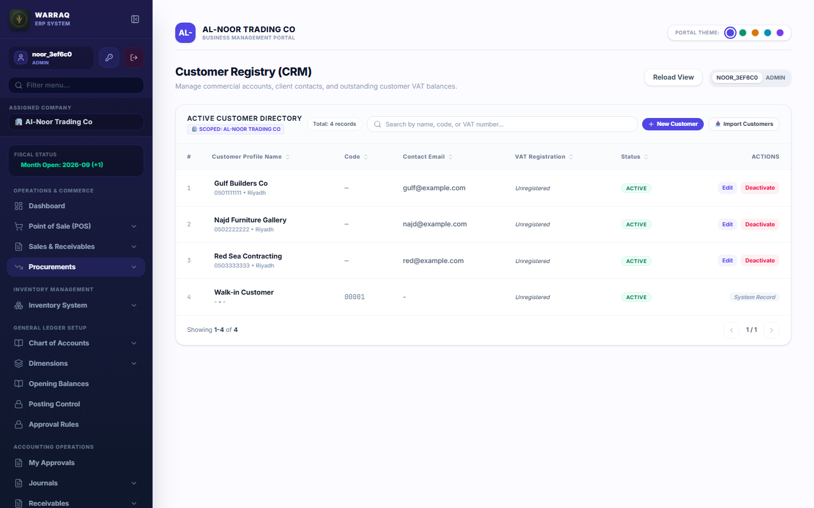
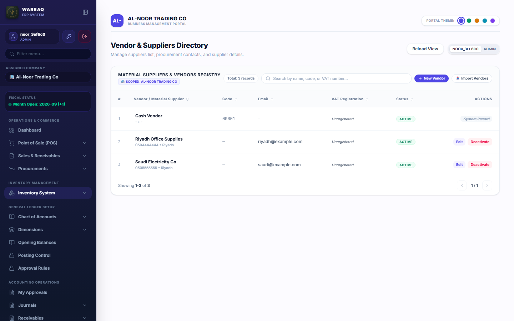
In 2.0 a customer or vendor can also carry a posting profile (its own control account and default dimensions), and customer and vendor balances are available from the ledger as aging and party-ledger reports. See What is different in 2.0.
Master Data / 02
Products & Catalog
Anything that appears as a line item on a quotation, invoice, POS sale, purchase order, or GRN — a physical product or a billable service — is defined once here first.
Products & Service Catalog
| Catalog Service / Item | POS Enabled | Type | Unit | Status | Unit Rate |
|---|---|---|---|---|---|
| UoM Test — Wood Screw | No | ITEM | PCE | Active | SAR 2.00 |
| MDF 18mm CNC Custom Cutting | No | SALES | No | Active | SAR 120.00 |
| CNC Cut Plywood Panel — 18mm | No | SALES | No | Active | SAR 250.00 |
| Wood Adhesive Glue 5kg | No | PURCHASE | Lumpsum | Active | SAR 28.00 |
Figure 5 — the product catalog, mixing physical stock items and billable services in one list
New Product form
Figure 6 — physical items get stock-control fields; a pure service skips them
| Field | Meaning |
|---|---|
| Description | Optional — a product can be saved with just a name. When filled in, it's available to show on quotations/invoices alongside the item. |
| Product Classification | Physical Item tracks real on-hand quantity (feeds Stock Registry, Stock Takes, valuation reports). A Service (e.g. "CNC Custom Cutting") has no quantity to track — it's billed but never runs out. |
| System Category Link | Optional grouping used for GL account mapping (see Product Categories below) and for report grouping. This is also the only category a product needs — there's no separate free-text POS category to keep in sync with it. |
| Default Warehouse/Branch | When every stock-item line on a sale agrees on the same product-level default, that warehouse is used automatically ahead of the branch/company default — still just a convenience, never a restriction; any warehouse can be picked manually instead. |
| Min / Max Level, Reorder Lead-Time | Drives the Low Stock / Reorder Report (§Inventory Reports) — purely advisory, does not block a sale when stock runs below minimum. |
| Transaction Flow Type | Whether this item normally appears on sales documents (invoicing/POS) or purchase documents (PO/GRN/Bills) — steers which pickers offer it by default. |
A product photo is stored directly in the database as the image itself (not a separate file), so size limits are enforced on upload: 150 KB max, 600px max / 150px min dimensions by default — configurable per company under Settings & Companies → Operations & Config → POS Terminal Settings (see §Templates, POS & Translations). An oversized or too-small upload is rejected immediately with the reason, not silently resized.
Product Categories
| Category Name | Parent Category | Sales GL | Asset GL | COGS GL |
|---|---|---|---|---|
| No categories defined yet — optional, add one to route this product line's postings to specific ledger accounts. | ||||
Figure 7 — a category exists mainly to map a whole product line to specific accounting ledger accounts
Categories can nest (a Parent Category field), letting you group e.g. "Raw Materials → Plywood → 18mm Plywood." Purely organizational unless GL mappings are filled in — those three optional fields redirect where sales/asset/cost-of-goods postings for products in this category land, instead of the company's default accounts.
Units of Measure
| Unit Name | Unit Code / Abbreviation | Status |
|---|---|---|
| Piece | PCE | Active |
| Box-50 | SET | Active |
Figure 8 — a base unit (Piece) and a conversion unit (Box-50, holding 50 pieces)
A Unit of Measure lets a product be bought in one unit and sold in another — receive a "Box-50" of wood screws from a vendor, then sell them by the individual "Piece" — the system converts quantities automatically wherever the two units relate to the same product.
Modifier Groups
Reusable option sets for POS sales — e.g. a Size group (Small/Medium/Large) or a Milk group (Whole/Oat/None), each option optionally carrying its own price adjustment. A group is created once here, then attached to any product that needs it. See §Point of Sale's "Grid density & product modifiers" for how a customer's picks actually price into the sale.
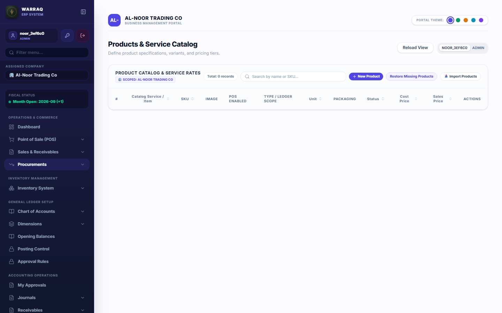
Master Data / 03
Warehouses
A warehouse is a physical stock-holding location — a real address, not just a label. Stock quantities in the Stock Registry, GRN receipts, and stock takes are always counted per warehouse, never company-wide.
| Warehouse Code | Warehouse Name | Location Address | Type | Status |
|---|---|---|---|---|
| RW-001 | Riyadh Branch Warehouse | No address specified | SALES | Active |
| WOOD-001 | Raw Wood Warehouse | Old Sanaya Riyadh | SALES | Active |
Figure 9 — two warehouses, each with its own code and address
| Field | Meaning |
|---|---|
| Warehouse Code | Short internal identifier, appears wherever space is tight (e.g. Stock Registry rows). |
| Type | SALES — stock here can be sold from (offered on invoices/POS). A purchase-only or in-transit warehouse can be marked differently to exclude it from sales pickers. |
A branch (§Company, Branches & Money) is an accounting/legal location a document is attributed to for reporting and ZATCA address purposes. A warehouse is where physical stock actually sits. A branch can have zero, one, or several warehouses; a company-wide user chooses freely between all warehouses, while a branch-restricted user's warehouse picker narrows to just their branch's own warehouses automatically.
Master Data / 04
Employees & Job Titles
An employee is a real person on staff — deliberately kept separate from a User (a login account). Not every employee needs to log into Warraq (a workshop floor worker onboarded purely for record-keeping may never get a login); not every login is necessarily tied to a named employee. Keeping them apart means a future Timekeeping/Attendance module can key off "employee," never "user."
| Employee | Job Title | Branch | Status |
|---|---|---|---|
| 0001 — Muhammad Imran | Sales Associate | Riyadh HQ Branch | Active |
Employee Number is generated automatically on save and cannot be changed afterward.
Figure 10 — the Employees list and onboarding form share one screen; note the row format "0001 — Name"
| Field | Meaning |
|---|---|
| Employee Number | System-generated, sequential, zero-padded (e.g. 0001). Permanent — never reused, never editable. Every list and picker shows it before the name ("0001 — Muhammad Imran") because names collide but numbers never do. |
| Job Title | Picked from Job Titles (below) — must be created there first. |
| Branch | "Head Office (Company-wide)" is a real, explicit option — not a blank default — meaning this employee isn't tied to any one physical location. Reassigning later between branches (or back to Head Office) is just a normal edit. |
Job Titles
| Title | Sales Role |
|---|---|
| Accounts Head | — |
| Sales | — |
| Sales Associate | Yes |
Figure 11 — the "Sales Role" flag decides who appears on the invoice's Sales Associate picker
A Job Title ("Sales Associate", "Cashier", "Warehouse Supervisor") is who someone is for HR and business-attribution purposes — it has no bearing on what they can click in the app. A Role (§Users, Roles & Permissions) is a bundle of screen permissions assigned to a login account. The two are completely independent: an employee's job title never grants or restricts app access, and a user's role never appears on an invoice.
Marking a Job Title's Sales Role flag on makes every active employee holding that title selectable as the Sales Associate on a Sales Invoice (§Quotations & Sales Invoices) — a pure attribution field for sales-bonus reporting, filtered to the invoice's own branch (plus Head Office employees) so a branch-restricted cashier never has to search a company-wide roster.
Transactions / 01
Point of Sale
A fast, walk-up-counter sale flow — pick items, take payment, print a receipt — as opposed to the multi-field Sales Invoice form (§Quotations & Sales Invoices) built for negotiated commercial sales. Every POS sale still becomes a real row in the same invoices table underneath, so it appears in every report the same as any other sale.
Cart empty
Figure 12 — the Terminal: a product grid on the left, running cart and total on the right
The four Terminal tabs
| Tab | Purpose |
|---|---|
| Terminal | The live sale screen — search or tap a product, adjust quantity, choose a customer (defaults to "Walk-in"), take payment, print. |
| Pending (Held) | A cart can be "held" mid-sale (e.g. customer steps away) and resumed later without losing the items already added. |
| Sales History | Every POS sale for the selected date range, each linking to its underlying invoice record. |
| Shifts & Z-Reports | Opens and closes a cashier's shift, tracking starting cash, total sales, and expected vs. actual cash at close-out (a "Z-Report"). |
Grid density & product modifiers
Built for touch-only counter hardware (coffee shops, restaurants) with no keyboard, where cashiers need a curated, tappable grid rather than a scrolling catalog list. Two related settings, both under Settings & Companies → Operations & Config → POS Terminal Settings:
| Setting | What it does |
|---|---|
| Grid Density | Compact / Standard / Dense / Custom — how many product tiles fit on screen at once. Each product also gets a priority position, so a shop can pin its best-selling 30 of 40 items as one-tap tiles while everything else stays reachable via category tabs and search. |
| Modifier Groups | Optional, reusable option sets (e.g. Size: Small/Medium/Large, Milk: Whole/Oat/None) attached to one or more products under Master Registries → Product Catalog → Modifier Groups. Any price difference a modifier carries folds directly into that line's unit price on the invoice — a product with no modifiers attached behaves exactly as before this existed. |
| Shift Time | User | Start Cash | Total Sales | Expected End | Actual End | Status |
|---|---|---|---|---|---|---|
| No shifts recorded for selected period. | ||||||
Figure 13 — a shift compares expected closing cash (opening + sales) against what was physically counted
Every shift, held sale, and POS sale is attributed to the branch the cashier is working under. A cashier restricted to "Jeddah Coastal Branch" never sees Riyadh's held carts or shift history, even by direct link.
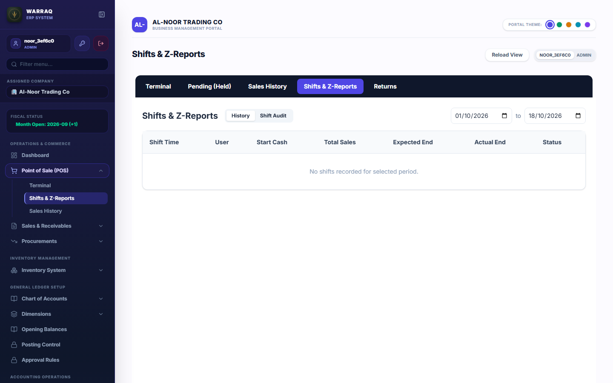
Transactions / 02
Quotations & Sales Invoices
Quotation Book
A quotation is a non-binding price estimate — it never touches stock, never posts to accounting, and can be freely edited or cancelled. Converting an accepted quotation into a real invoice is one click and carries every line item across.
| Doc No | Date | Customer | Grand Total | Status |
|---|---|---|---|---|
| QT-1006 | 2026-08-30 | Sultan Al-Ahmad Designs | 115.00 SAR | Draft |
| QT-1001 | 2026-08-16 | Walk-in Customer | 287.50 SAR | Draft |
Figure 14 — KPI cards summarize the whole quotation pipeline before the list even loads
| # | Item Description | Unit Price | Qty | Discount | Total |
|---|---|---|---|---|---|
| 1 | Type or search item from catalog... | 0.00 | 1 | 0.00 | 0.00 |
Figure 15 — a quotation's line items search directly against the Products catalog you built in Master Data
Sales Invoices
The real, legally binding commercial sale — the one document type this whole system, and ZATCA compliance, ultimately exists to produce correctly.
| Invoice No | Type | Date | Customer | Grand Total | Status | Payment | ZATCA |
|---|---|---|---|---|---|---|---|
| No invoices issued for this period. Click "Issue Invoice" or convert from Quotations. | |||||||
Figure 16 — the date filter defaults to the 1st of the current month through today (see §Navigating Warraq)
New Sales Invoice form
| # | Item | Unit Price | Qty | Discount | Tax Slab | Total |
|---|---|---|---|---|---|---|
| 1 | Type or search item... | 0.00 | 1 | 0.00 | VAT (15%) | 0.00 |
Figure 17 — every field the Sales Invoice form asks for, including the ZATCA submission trigger fired on save
| Field | Meaning |
|---|---|
| Sales Warehouse | Where the sold stock is deducted from — matters for physical products, ignored for services. |
| Post Inflow Bank | Only meaningful when Payment Status is "Paid" — which bank account records the cash/transfer received. |
| Payment Status | Paid books the receipt immediately. Pending / Credit leaves it as Accounts Receivable until collected later (via the invoice's own "Record Payment" action). |
| Per-line Tax Slab | Each line can carry its own VAT slab (e.g. a mixed invoice with a zero-rated export line and a standard 15% line) — it isn't forced to one rate for the whole document. |
Saving finishes instantly on screen. Moments later, in the background, the invoice is automatically submitted to ZATCA for clearance/reporting (if the company has ZATCA enabled — see §ZATCA E-Invoicing) — you don't trigger this separately. Reopen the invoice a few seconds later to see whether ZATCA returned Cleared/Reported or Rejected.
ZATCA has no "void" API. If an invoice needs to be reversed after clearance, the only compliant path is issuing a Credit Note against it (an action available from the invoice's own menu) — never editing the original after the fact.
Five checks run before an invoice is accepted: it must have at least one line item; every line's sales price must be greater than zero; a line's discount can't reduce that price to zero or below; discounts can be entered in decimals (e.g. 2.50), not whole numbers only; and the invoice's net total must be greater than zero. All five apply to Credit Notes the same way, since a Credit Note is the same underlying document type.
Every invoice also has a Download PDF button, separate from Print — see the "Print vs. Download PDF" callout in §Templates, POS & Translations for how the two deliberately differ.
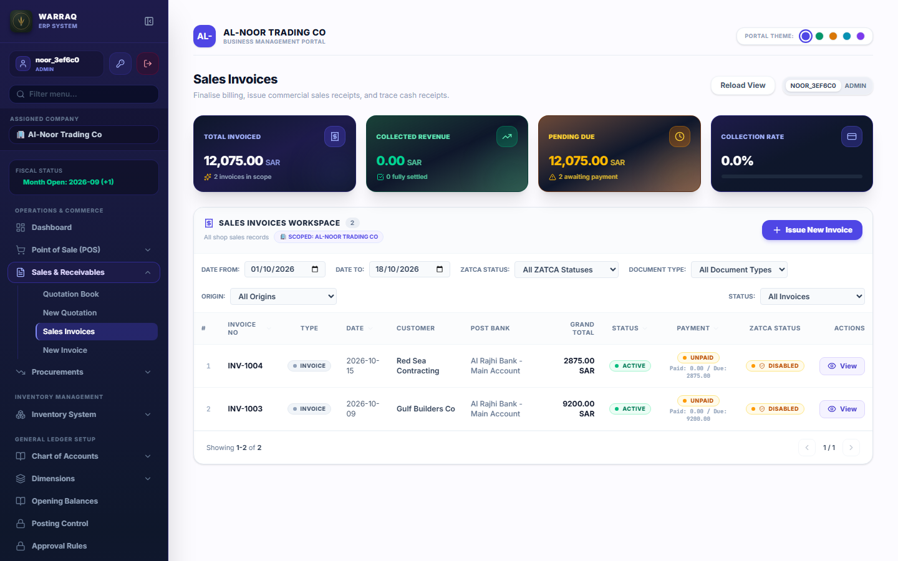
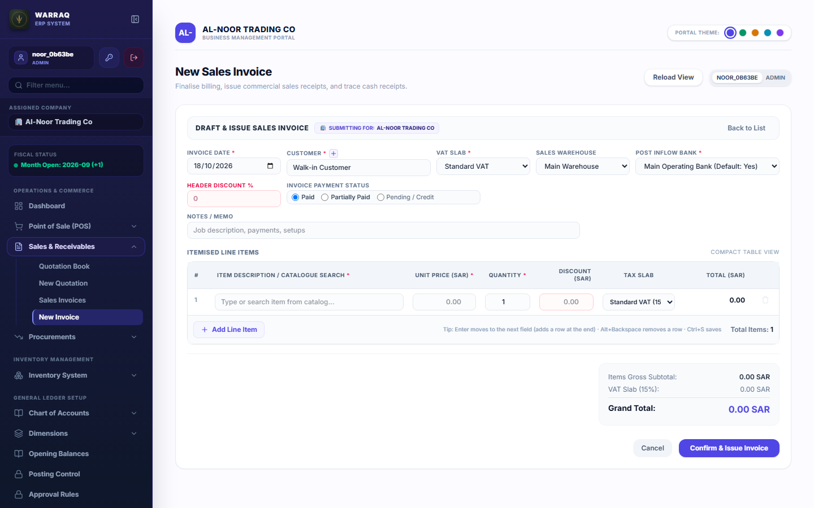
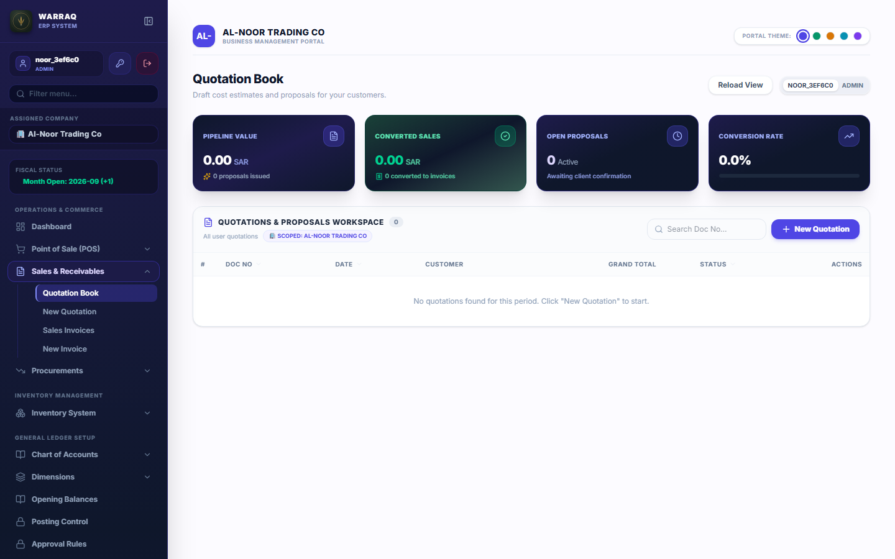
In 2.0 an invoice or credit note also posts to the ledger, tagged with the customer. Payments can be recorded from Receivables › Receive Payment (one receipt over several invoices, or on account). A credit note above an approval rule’s amount waits for approval before it is issued. A document dated in a locked period is refused. See Receivables.
Transactions / 03
Expenses & Recurring Postings
Anything the company pays out that isn't a formal Purchase Order against received goods — tool bits, utilities, rent, one-off services — is logged here as an expense.
☐ Enable Itemised Purchase Breakdown — recommended for stock tracking
Figure 18 — the New Expense form; OpEx/CapEx classification decides how it hits the financials
| Field | Meaning |
|---|---|
| Operating Expense (OpEx) | Consumed immediately — hits the Profit & Loss statement's Expenses line for the period, in full. |
| Fixed Asset (CapEx) | A capitalized purchase (e.g. new machinery) — recorded as an asset on the Balance Sheet rather than an immediate expense. |
| Enable Itemised Purchase Breakdown | Optionally records line-by-line items instead of one lump sum — recommended when the expense should also update stock quantities for tracked products. |
Recurring & Accruals
For predictable, repeating costs (rent, utilities, salaries) that shouldn't need to be manually re-typed every month.
| Template | Default Cost | Default Account | Status | |
|---|---|---|---|---|
| Factory High-Voltage Power Utility Bill | SAR 850.00 | Riyad Bank | Unposted | Post Expense |
| Monthly CNC Workshop Space Rent | SAR 2500.00 | Riyad Bank | Unposted | Post Expense |
| Workshop Supervisor Salary Pool | SAR 4500.00 | Al Rajhi Bank | Unposted | Post Expense |
Figure 19 — three recurring templates, none posted yet for the open month
Every active recurring template must be posted — either as a real, paid expense ("Actual") or as an accrual (a placeholder liability, settled with the real bill later) — before that fiscal month can be closed (§Fiscal Periods, Capital & VAT Filing). This is deliberate: it stops a month from closing "clean" while a known recurring cost was simply forgotten.
An accrual posted this way sits in "Unsettled Accrual Ledger Entries" until the real invoice/bill for it arrives, at which point it's matched and settled — the accrual reverses and the real cost replaces it.
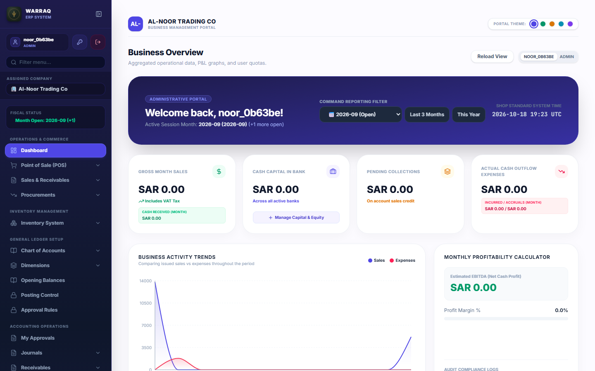
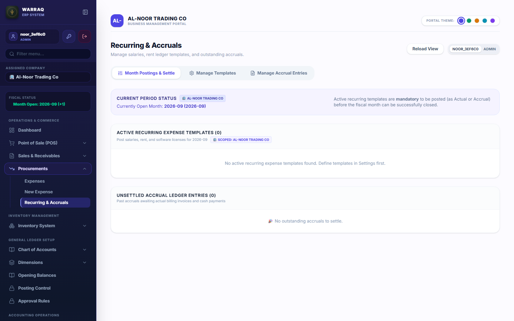
In 2.0 an expense also posts to the ledger, tagged with the vendor, and can be paid from Payables › Pay Vendor together with bills. A posting date on or before the company’s lock date, or older than its back-date window, is refused or needs a reason. See Payables.
Transactions / 04
Purchasing & Inventory
This is one connected chain, not seven unrelated screens — each document normally feeds the next. Skipping straight to a Purchase Bill without a PO/GRN behind it is allowed, but the chain exists so a formal approval → order → receipt → invoice trail is available when you want it.
1 — Purchase Requisitions (PR)
An internal request: "we need to buy this" — raised by anyone with the permission, before a vendor is even chosen.
| PR Number | Requested By | Date | Items | Status |
|---|---|---|---|---|
| PR-1001 | Phase 2 Test | 8/30/2026 | 1 | Pending |
Figure 20 — a PR needs no vendor or price yet, only what's needed and why
2 — Purchase Orders (PO)
The formal, priced commercial document sent to a specific vendor. Can be raised standalone or from an approved PR.
| PO Number | Vendor | Date Created | Total | Status |
|---|---|---|---|---|
| PO-1001 | Cash Vendor | 8/30/2026 | 230.00 SAR | Sent |
Figure 21 — once "Sent," a PO is waiting on physical goods to arrive (§3) and a vendor bill (§4)
3 — Goods Receipt (GRN)
Records that ordered goods actually physically arrived at a warehouse dock — this is the step that increases real on-hand stock quantity, not the PO or the Bill.
| GRN Number | Vendor | Receiving Warehouse | Vehicle/Driver | Date Received | Received By |
|---|---|---|---|---|---|
| GRN-1001 | Gulf Wood & Timber Suppliers | Raw Wood Warehouse | — | 9/1/2026 | UoM Verification Script |
Figure 22 — a GRN pins receipt to one specific warehouse; that warehouse's Stock Registry updates immediately
4 — Purchase Bills
The vendor's actual invoice to you, recorded against what was received. Deliberately built so totals are always computed from the linked GRN, never re-typed by hand — the reconciliation happens by construction, not by a person double-checking two documents.
| Bill Number | Vendor | Grand Total | Paid | Status |
|---|---|---|---|---|
| No purchase bills recorded yet. | ||||
Figure 23 — "record vendor invoices against received goods — totals are always computed from the linked receipt, never entered by hand"
5 — Purchase Returns
Sending goods back to a vendor against a prior receipt, recording the resulting debit note (a reduction of what's owed to that vendor).
| Return Number | Vendor | Linked GRN | Date | Status |
|---|---|---|---|---|
| No purchase returns recorded yet. | ||||
Figure 24 — like Purchase Bills, a return is always anchored to a specific prior GRN, not a free-standing document
Physical Stock Takes
A manual, periodic count of what's physically on the shelf, reconciled against what the system believes is there — the mechanism that catches shrinkage, damage, or data-entry drift over time.
| Reference | Warehouse | Performed By | Date | Status |
|---|---|---|---|---|
| No stock takes recorded yet. | ||||
Figure 25 — a completed stock take's variances feed the Stock Take Variance History report (§Inventory Reports)
Stock Registry
Not a document you create — a live, read-only view of exactly what's on hand, right now, per product and per warehouse. Every GRN, sale, return, and stock-take adjustment updates it in real time.
| Product / Material | Location / Warehouse | Batch Number | Expiry Date | On-Hand Qty |
|---|---|---|---|---|
| UoM Test — Wood Screw | Raw Wood Warehouse | — | — | 180 |
Figure 26 — a manual "Adjust Stock" action exists for corrections outside the normal PR/PO/GRN/Return/Take flow
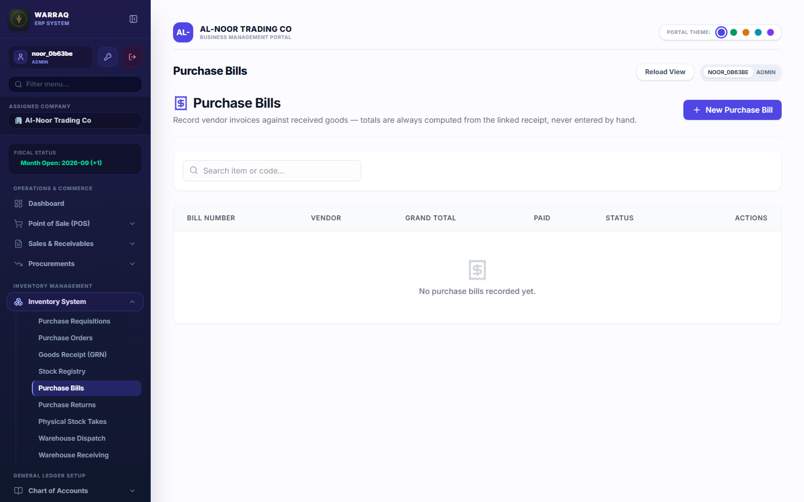
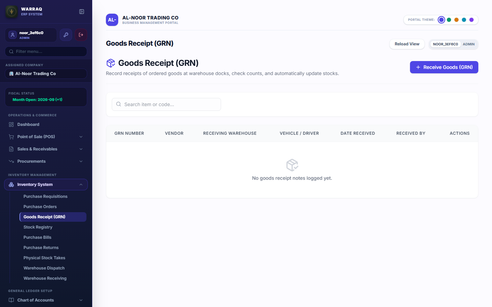
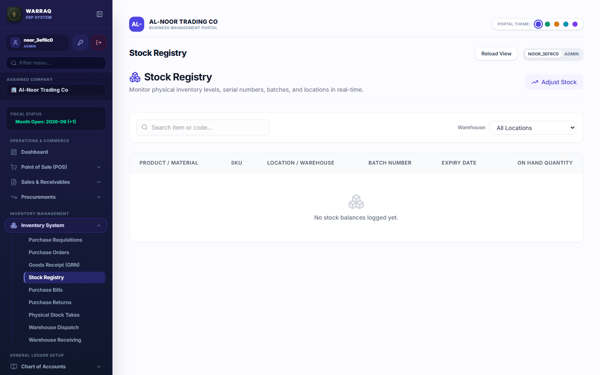
In 2.0 goods receipts and purchase bills post to the ledger (stock against goods received not invoiced, then the payable). A purchase bill above an approval rule’s amount waits for approval, and a bill that needs approval cannot be auto-posted at delivery. Pay bills from Payables › Pay Vendor. See Payables.
Reports / 01
Financial Reports
Every financial report shares the same shell: a From Date / To Date filter (defaulting to month-to-date, see §Navigating Warraq), an Export Statement (Print) button, and a scoped-to-this-company banner. Reports never let you edit a number — every figure traces back to a real transaction you can find and open elsewhere in the app.
Profit & Loss
Figure 27 — the Accrual/Cash Basis toggle: Accrual counts a sale the moment it's invoiced, Cash counts it only when actually collected
Balance Sheet — the one exception to "date range"
Assets = (Liabilities + Equity) balance check: SAR 1,059,070.25
Figure 28 — unlike every other report here, Balance Sheet is a snapshot as of the To Date, not a range
Assets, Liabilities, and Equity are point-in-time balances, not period activity — "how much cash exists right now" doesn't add up the way "how much was sold this month" does. So Balance Sheet quietly uses only the To Date as its as-of date and ignores the From Date, and always prints its own balance-check line at the bottom to prove the accounting equation holds.
The other eight statements
| Report | What it shows |
|---|---|
| Trial Balance Ledger | Every ledger account's debit and credit total for the period, side by side — the fundamental double-entry check that the books balance. |
| Sales VAT Register | Every sale's VAT collected, the source data behind a VAT return. |
| Purchase VAT Register | Every purchase's VAT paid (input tax) — combined with the Sales VAT Register to calculate net VAT payable. |
| Bank Statement Ledger | Every transaction that moved money through one bank account, in date order — an internal reconciliation view against your real bank statement. |
| Outstanding Aging & Balances | Every unpaid customer invoice, bucketed by how many days overdue — the same data feeding the Dashboard's "Pending Invoices" widget. |
| VAT Return Summary | A summarized, ready-to-file view feeding the actual VAT filing action (§Fiscal Periods, Capital & VAT Filing). |
| Investor Profit Share | For companies with registered capital investors (§Fiscal Periods, Capital & VAT Filing): each investor's share of profit for the period based on their recorded equity percentage. |
| Fiscal Month Closing History | An audit trail of every month ever closed for this company, and who closed it. |
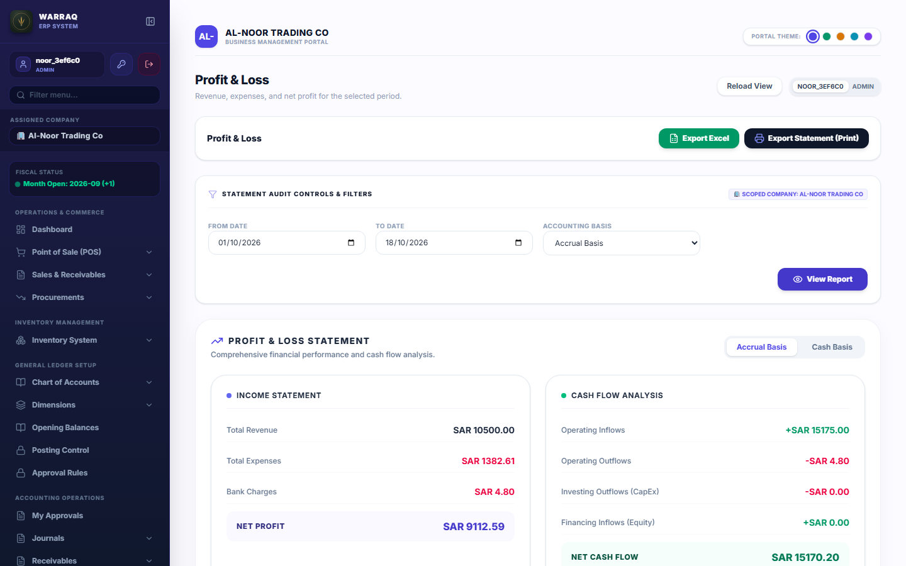
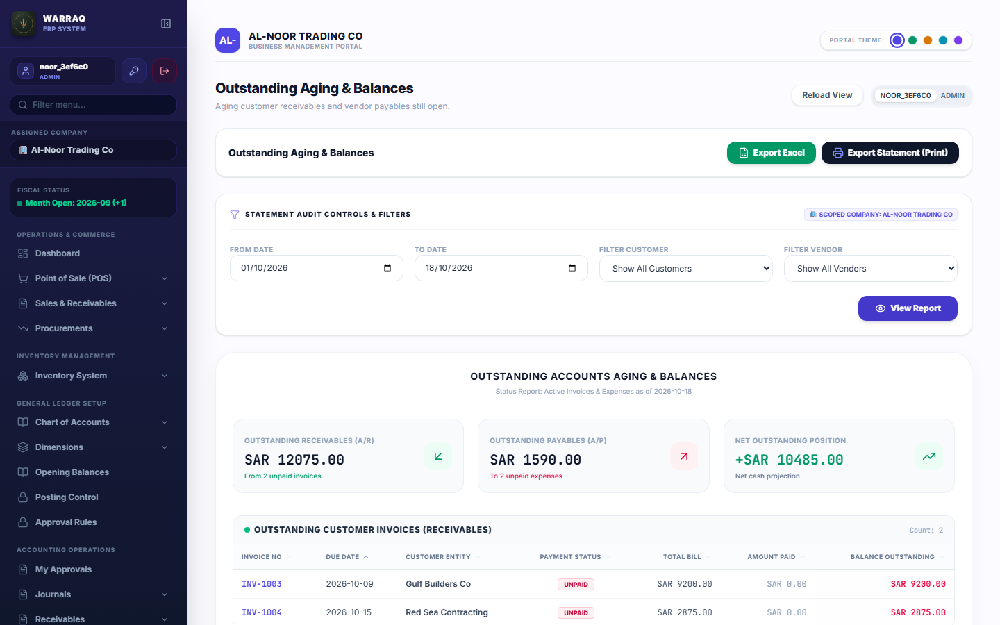
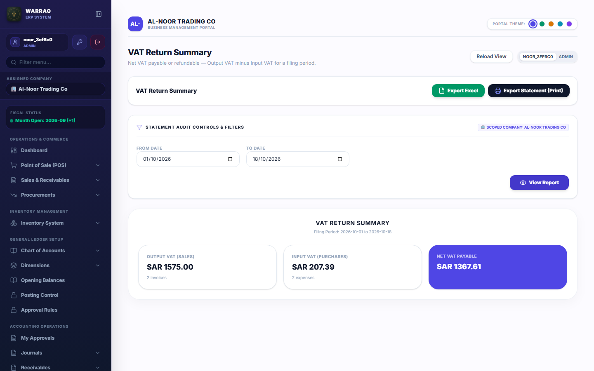
Reports / 02
Sales, Purchase & Inventory Reports
Where Financial Reports speak in accounting terms (debits, VAT, ledger accounts), these three groups speak in operational terms — which customer, which product, which vendor, which warehouse.
| Invoice # | Date | Customer | Status | Payment | ZATCA | Grand Total |
|---|---|---|---|---|---|---|
| Total Sales: | SAR 0.00 | |||||
Figure 29 — every list report in this family filters by Customer/Vendor and Branch in addition to the date range
Sales Reports (6)
| Report | What it shows |
|---|---|
| Sales Register | Every sales invoice in a period, with status and payment detail — the master sales list. |
| Item-wise Sales Report | Sales totals broken down by individual product/service, not by invoice — "what actually sold." |
| Customer Statement of Account | One customer's full running ledger: every invoice, every payment, current balance owed. |
| Quotation Conversion Report | How many quotations became real invoices, and how long that took — the same conversion-rate metric shown on the Quotation Book's KPI card, in detail. |
| Sales by Staff | Totals attributed to each employee marked as the invoice's Sales Associate (§Employees & Job Titles) — the report a sales-bonus calculation would be built from. |
| POS Shift Summary | Sales totals grouped by POS cashier shift, cross-referencing the Shifts & Z-Reports screen. |
Purchase Reports (4)
| Expense # | Date | Vendor | Classification | Payment | Amount |
|---|---|---|---|---|---|
| Total: | SAR 0.00 | ||||
Figure 30 — Purchase Register combines Expenses and Purchase Bills into one vendor-spend view
| Report | What it shows |
|---|---|
| Purchase Register | Every purchase expense in a period, by vendor and classification (OpEx/CapEx). |
| Vendor Statement of Account | One vendor's full running ledger — mirrors Customer Statement of Account, from the other side of the relationship. |
| Purchase Order Status Report | Every open PO and how far along the PO → GRN → Bill chain it's progressed. |
| GRN vs. PO Variance | Flags where what was actually received differs from what was ordered — quantity or price mismatches worth investigating. |
Inventory Reports (5)
| Product | Warehouse | On Hand | Unit Cost | Value |
|---|---|---|---|---|
| UoM Test — Wood Screw | Raw Wood Warehouse | 180 | SAR 1.56 | SAR 280.80 |
| Total Stock Value: | SAR 280.80 | |||
Figure 31 — Stock Valuation feeds the "Inventory Value" line on the Balance Sheet directly
| Report | What it shows |
|---|---|
| Stock Valuation Report | On-hand quantity valued at average cost, per product and warehouse — the figure that becomes the Balance Sheet's Inventory Value. |
| Item Profitability Report | Margin per product: sales revenue against its costed value, to see which items are actually profitable. |
| Low Stock / Reorder Report | Every product currently below its Min Level (set in the product's own master-data record) — a shopping list for the next PR. |
| Stock Take Variance History | Every completed physical stock take and the gap it found between system quantity and physically counted quantity. |
| Stock Movement Ledger | A chronological audit trail of every single quantity change for a product — sale, receipt, return, or manual adjustment — the lowest-level detail behind every other inventory report. |
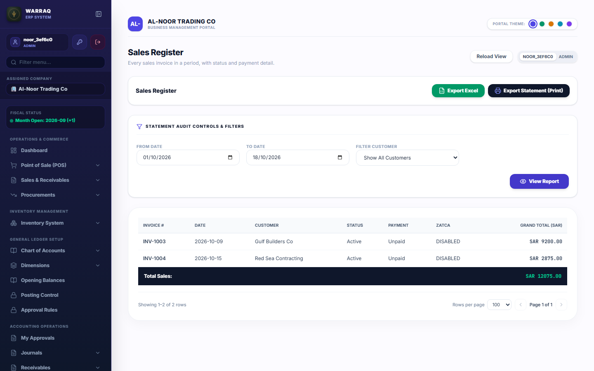
Configuration / 01
Company, Branches & Money
Settings & Companies is a single screen internally organized into five tab groups — Organization & Setup, Operations & Config, Governance & Staff, Fiscal & Capital, and System & Backup — each covered by its own part of this manual. This part covers the first.
Figure 32 — the five tab groups, each expanding into its own sub-tab strip
Company Profile
Global identity details applied to every printed quotation, invoice, and expense: logo, legal name, contact details, physical address. Its "VAT Number" field is cosmetic-only — printed on documents, but entirely separate from the real tax identity used for ZATCA (§ZATCA E-Invoicing), which is entered independently inside the ZATCA wizard itself. It stays optional (a company pre-ZATCA-onboarding may not have one to hand yet), but once you do enter a value it's checked immediately: exactly 15 digits, numeric only, or the save is rejected with the reason.
Companies Directory
Super Admin only. Lists every company on the whole Warraq platform, and is where a brand-new company is registered from scratch.
Figure 33 — a fresh company starts fully isolated: its own customers, products, users, and ZATCA identity from day one
To save setup effort, saving this form (or approving an onboarding request — same underlying provisioning either way) immediately creates a standard starting kit: a Main Operating Bank account, a "Walk-in Customer" and a "Cash Vendor" system record, a Standard VAT (15%) tax slab, a "Main Warehouse", a default "Piece (PCE)" unit of measure, three starter print templates — Compact A4, Compact A4 Arabic, and Detailed Compact (English, active by default) — all immediately selectable and editable (see §Templates, POS & Translations), and an open fiscal month for the current calendar month. None of it is locked in — every one of these is a normal record you can rename, deactivate, or add more of afterward.
Bank Accounts
Figure 34 — every invoice/expense's "bank" field picks from this list; the running balance updates as documents post
The Default bank pre-fills as the payment bank on new invoices/expenses. A bank can be marked Inactive once no longer used, without deleting its history.
Tax Slabs
| Tax Description | Percentage | Default |
|---|---|---|
| Exempt (0%) | 0% | — |
| VAT (15%) | 15% | Default |
| Reduced (5%) | 5% | — |
Figure 35 — Saudi Arabia's standard rate is 15%; additional slabs exist for exempt/zero-rated and special cases
An exempt or zero-rated slab must carry a ZATCA exemption reason code before it's used — an invoice built on an unreasoned exempt slab is flagged with a live warning and is at risk of a ZATCA sandbox validation error.
Branches (Locations)
| Name | Code | City | Status |
|---|---|---|---|
| Riyadh HQ Branch | RUH | Riyadh | Active |
| Jeddah Coastal Branch | JED | Jeddah | Active |
Figure 36 — each invoice/quotation can be attributed to one branch, whose own address prints on the ZATCA e-invoice
A company that adopts branches after already having transaction history will have old documents with no branch set. This action assigns a chosen branch to every currently-unassigned document in one pass — restricted to unrestricted/admin callers only, and re-runnable safely since it only ever touches rows that are still unassigned. Once run for a document, it's a normal edit from then on, never automatically reassigned again.
Document Numbering
| Document Type | Prefix | Sep. | Pad | Show Branch Code | Next Number |
|---|---|---|---|---|---|
| Quotation | QT | - | 6 | ☐ | QT-1007 |
| Invoice | INV | - | 6 | ☐ | INV-1051 |
| Credit Note | CN | - | 6 | ☐ | CN-1015 |
| Debit Note | DN | - | 6 | ☐ | DN-1001 Prefix Collision |
| Expense | EXP | - | 6 | ☐ | EXP-1003 |
| Purchase Requisition | PR | - | 6 | ☐ | PR-1003 |
| Purchase Order | PO | - | 6 | ☐ | PO-1003 |
Figure 37 — a "Prefix Collision" warning means two document types currently generate identically-formatted numbers
| Field | Meaning |
|---|---|
| Prefix / Separator | The literal text before the running number, e.g. INV-. |
| Pad Width | How many digits the number is zero-padded to (6 → 001051 shown as 1051 once past that width). |
| Show Branch Code | When on, the branch's short code (§Branches above) is woven into the printed number for that document type. |
| Reset | Whether the sequence restarts (e.g. yearly) or counts forever — the underlying counter always counts company-wide, never per-branch, even when a branch code appears in the printed number as cosmetic text. |
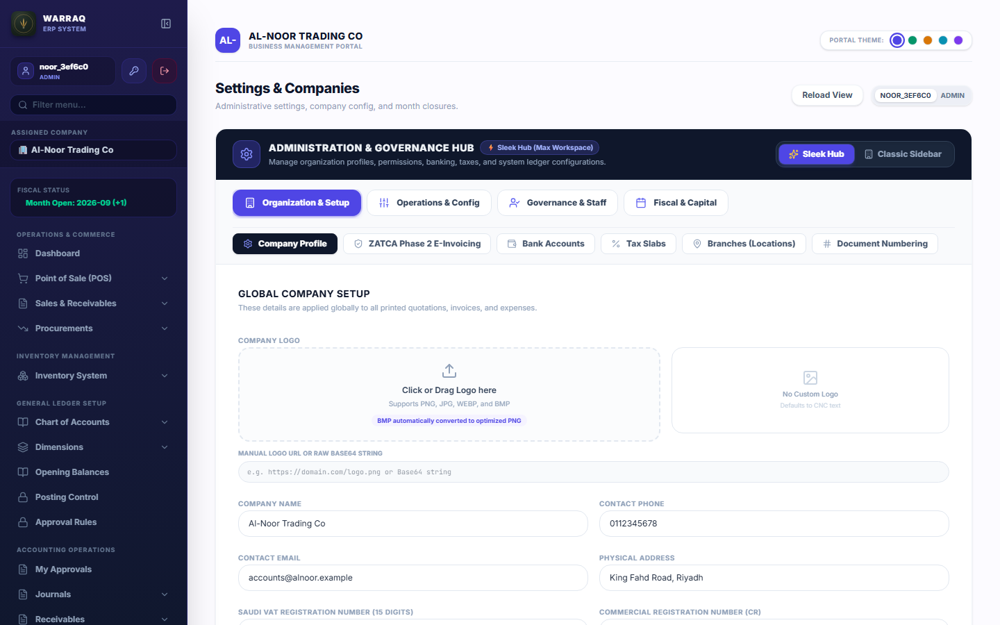
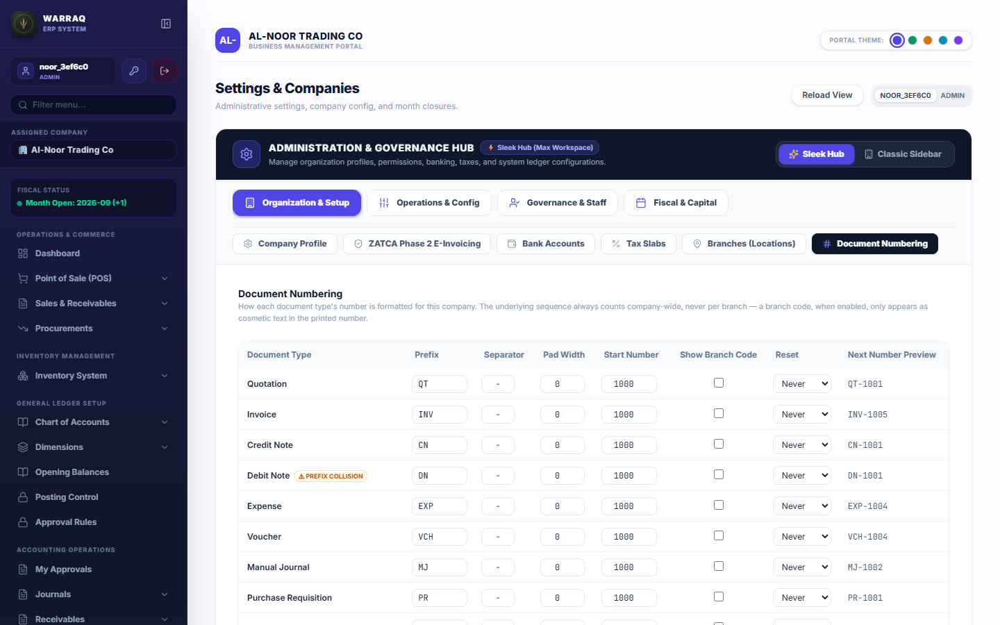
Configuration / 02
ZATCA E-Invoicing
Connecting a company to Saudi Arabia's mandatory e-invoicing gateway is involved enough to warrant its own dedicated manual — this section only summarizes what the screen is and how it fits into the rest of Warraq; for the full step-by-step walkthrough (all 5 onboarding steps, Sandbox/Simulation/Production differences, troubleshooting), see the companion ZATCA Onboarding — Company Setup Guide.
Figure 38 — Sandbox, Simulation, and Production each onboard independently, with their own identity and certificate
- Onboarding is Company Admin / Super Admin only — no permission toggle exists for it, since it touches the company's cryptographic signing keys.
- Every Invoice, Credit Note, and Debit Note is automatically submitted to ZATCA moments after it's saved — this happens silently in the background, never something you trigger by hand.
- A separate, company-wide switch (visible to Super Admins in Companies Directory) actually turns ZATCA submission on or off — it auto-enables the first time Sandbox onboarding completes, but stays off if a company's first completed environment is Simulation or Production instead.
- Once ZATCA has returned Cleared or Reported for an invoice, it can never be locally cancelled — a Credit Note is the only compliant reversal.
A B2B customer (§Customers & Vendors) needs a complete address and VAT number on file or their invoices are refused clearance; a B2C customer only needs a name. Get this set correctly on the customer record once, and every invoice to them inherits the right ZATCA workflow automatically.
Configuration / 03
Users, Roles & Permissions
Staff Permissions — provisioning a login
Figure 39 — a new account is assigned a company, one or more Roles, and (optionally) branch restrictions
Assigning specific branches to a user (instead of leaving them unrestricted) is what makes every branch-scoped filter throughout this manual actually narrow for them — invoice lists, warehouse pickers, employee pickers, POS shifts. Leaving a user with no branch assignment means company-wide access to every branch's documents.
Any password you set here — for a brand-new account or when resetting an existing one — must be at least 6 characters and contain at least one letter and one digit. Whenever an admin sets a password for someone else, that account is flagged to change it on their very next login, before they can use anything else in the app; the account list itself never displays anyone's actual password. A logged-in user can always change their own password voluntarily from the key icon next to Sign Out, without needing an admin.
Roles — reusable permission bundles
| Role | Users Assigned |
|---|---|
| Branch-Restricted Test Role | 10 |
| LocQA Restricted Role | 2 |
| LocQA All-Branches Role | 1 |
| Phase2 Restricted Role | 1 |
Figure 40 — a permission tree lets each Role cascade whole modules on/off, or granular leaves within one
| Concept | How it works |
|---|---|
| Multiple roles per user | A user's effective permissions are the union of every Role assigned to them — a screen granted by any one of their roles is visible, regardless of what the others say. |
| No per-user override | There is no individual exception layered on top of role assignment — a deliberate design choice, not a missing feature. To change what one person can do, change their role assignment. |
| Admin / Super Admin bypass | An account marked admin or super-admin skips every granular permission check entirely and always sees everything for their scope. |
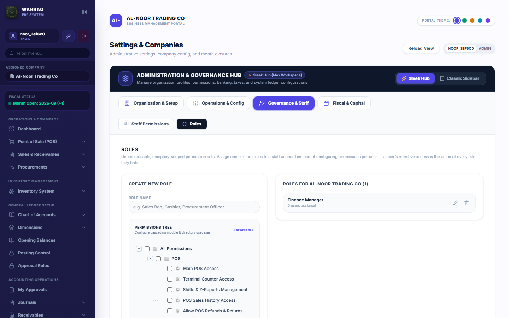
In 2.0 the roles editor also holds the permissions of the finance core (approval rules, approvals, bank reconciliation, receipts, vendor payments, posting control with its back-date and override-lock rights), and a user record has a Manager field. See Roles and permissions.
Configuration / 04
Document Templates, POS & Translations
Document Templates
Controls what a printed Quotation or Invoice actually looks like. A company can save as many templates as it wants — including several at once in different languages — and freely switch which one is active (the one pre-selected when printing) at any time. Every new company starts with three: Compact A4 (a clean, minimal English layout with no boxes — logo top-left, seller/buyer plain text, the items table given all the vertical room, notes/QR/totals pinned to the page bottom), Compact A4 Arabic (the same layout, fully mirrored right-to-left with every label translated), and Detailed Compact (a denser traditional GCC tax-invoice layout — item codes, per-line tax and subtotal columns, itemized buyer address). All three, and anything else you design afterward, stay fully editable in the Canvas Designer.
Each carries independent toggles: Print Header / Footer / Logo / QR Code, plus ⚙️ Design, 👁️ Preview, and (Super Admin only) 📋 Copy to another company.
Figure 41 — the three starter templates every new company begins with; a thermal 4×6in receipt format is also available for POS
The Print button on any invoice/quotation renders through whichever template is currently active for that company, exactly as designed here. The Download PDF button on the same document is completely independent: it always renders one fixed, consistent layout, the same for every company on the platform, regardless of what that company's own active Print template looks like. This is intentional — a company can restyle what its counter staff print freely, without ever risking a broken or half-finished custom template reaching a downloaded PDF a customer keeps. Download PDF is generated server-side (a real headless-browser render, not a client-side screenshot), so its formatting, fonts, and Arabic/Urdu rendering are identical no matter who downloads it or from where.
Rather than rebuilding an identical layout by hand, a Super Admin can click 📋 on any template, pick a target company and a name, and an inactive copy is created there immediately — ready to review and activate on that company's own schedule. It never touches whatever template the target company already has active.
POS Terminal Settings
☑ Auto-Print Receipts — automatically print thermal receipts after payment
Figure 42 — these three limits are exactly what §Products & Catalog referenced for the product photo uploader
Translations
| UX Key | English | Arabic (AR) | Urdu (UR) |
|---|---|---|---|
| Customers CRM | Customers CRM | إدارة العملاء | کسٹمر سی آر ایم |
| Products & Pricing | Products & Pricing | المنتجات والأسعار | مصنوعات اور قیمتیں |
Figure 43 — every label, button, and status in the app resolves through this dictionary in all three languages
Only fixed app vocabulary lives in this dictionary — field labels, buttons, status words. A customer name, a product name, or any other text a company itself typed in is never translated here and should never be added — there's no fixed set of possible values for it to translate correctly, and the shared dictionary is common to every company on the platform.
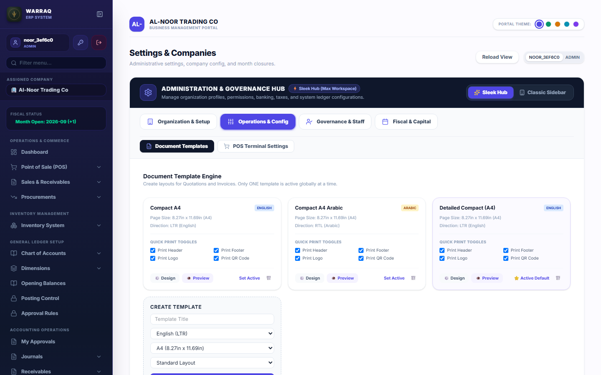
Configuration / 05
Fiscal Periods, Capital & VAT Filing
Month Opening / Closing
Every transaction date must fall inside a fiscal month that's currently Open — this is what "Month Open: June 2026" at the top of every screen actually enforces. Several months can be open at once (up to a server-enforced cap), closing oldest-first.
| Fiscal Month | Status | Actions |
|---|---|---|
| 2026-08 | Open | Close & Lock Month |
| June 2026 Global Open | Open | Close & Lock Month |
| May 2026 | Closed | Locked (Paid) |
| July 2026 | Open | Close & Lock Month |
Figure 44 — 3 months currently open (of up to 5 allowed concurrently); closing is permanent and locks every document dated within it
A month refuses to close while any active Recurring & Accruals template (§Expenses & Recurring Postings) for it is still unposted — the server enforces this with a clear message, not a silent failure.
Capital & Equity
Figure 45 — a registered investor's equity share drives the Investor Profit Share report (§Financial Reports)
Recording a real cash injection from an investor requires at least one investor registered first, then logs it as a capital contribution against a specific bank account — this is what moves the "Capital Contributed" line on the Balance Sheet.
VAT Returns (ZATCA Filing)
| Reference | Status | Sales | VAT on Sales | Purchases | VAT on Purchases | Net Payable |
|---|---|---|---|---|---|---|
| Q1-2026 | Generated | SAR 0.00 | SAR 0.00 | SAR 0.00 | SAR 0.00 | SAR 0.00 |
Figure 46 — "Generate" computes the return from real Sales/Purchase data; "Mark as ZATCA Filed" is a separate, deliberate step
"Mark as ZATCA Filed" only records that you personally filed this return on ZATCA's own government VAT portal — it does not file anything for you. But once marked, it permanently locks every document in that quarter from further edits — only click it once the real filing on ZATCA's portal is actually done.
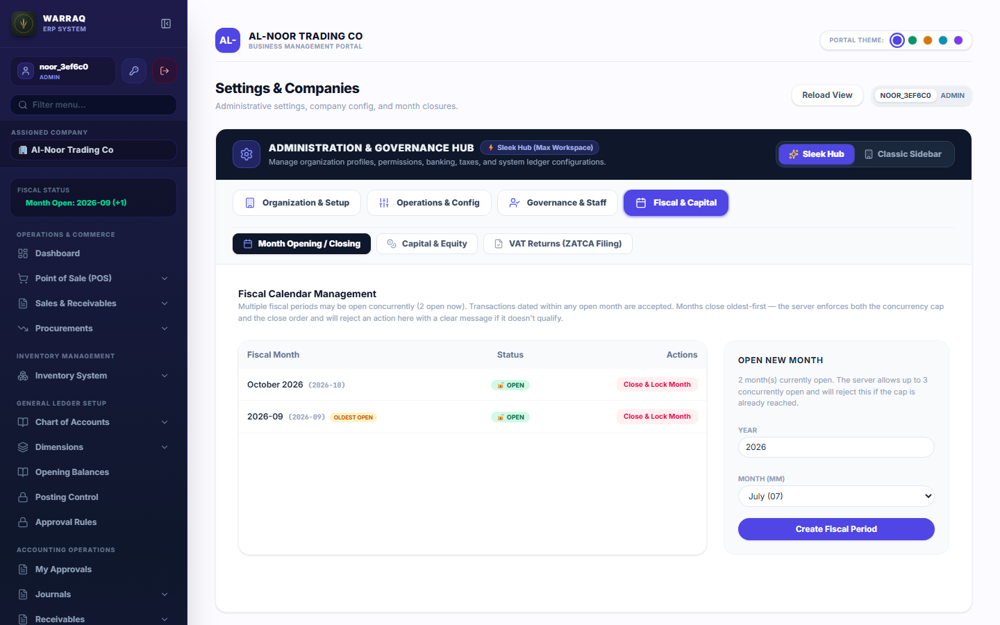
In 2.0, closing a month is one of several controls on posting: the company can also set a lock date and a back-date window (General Ledger Setup › Posting Control). See Period routine and corrections.
Configuration / 06
Backup & Data Portability
Figure 47 — a full point-in-time export of every company, user, and transaction on the platform
This is a platform-wide operation, not scoped to one company — importing a backup replaces everything currently in the database. Treat it with the same caution as any irreversible, whole-database action; confirm you actually intend to discard current data before proceeding.
Finance core (Warraq 2.0)
General Ledger, Receivables, Payables and Bank
The chapters from here to the glossary describe Warraq 2.0 (the Demo). Live (1.0) does not have them yet. The screens in these chapters are real screenshots of a demonstration company, Al-Noor Trading Co; the panels above are reproductions.
Who does what. Accountant prepares and posts; Approver / Finance manager approves journals, reopens reconciliations, overrides locks; Clerk receives and pays; Administrator sets roles. A person's rights come from their roles (chapter 10).
For how the system works inside, and what each requirement is, see the technical documentation.
Finance core · chapter 1
Signing in and finding your way
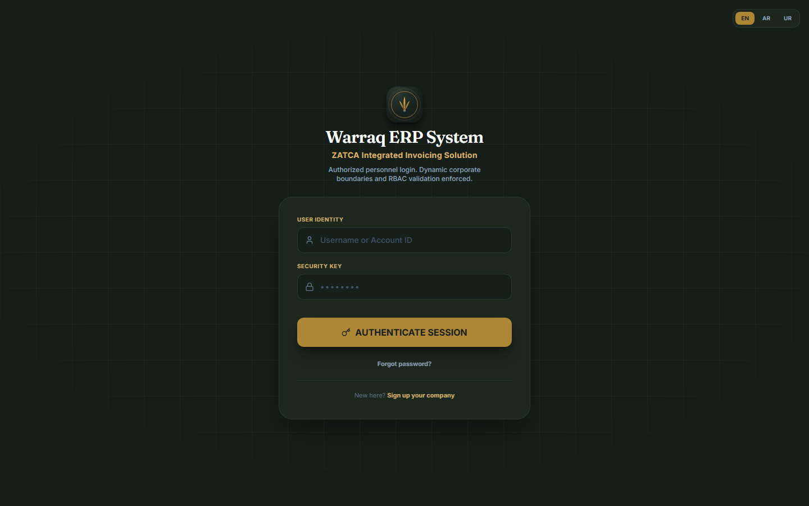
Sign in with your user name and password. The first time, you may be asked to change the password.
The left menu is the whole system. Work in this manual lives in three menu sections that follow the order of the work: General Ledger Setup (Chart of Accounts, Dimensions, Opening Balances, Posting Control, Approval Rules), Accounting Operations (My Approvals, Journals, Receivables, Payables, Bank Reconciliation) and General Ledger Reports. Your menu shows only what your roles allow. The top of the menu shows your company and the open fiscal month. Use Filter menu… to find a screen by name.
Finance core · chapter 2
Setting up the books (once)
2.1 Chart of accounts (BR-COA-01…08)
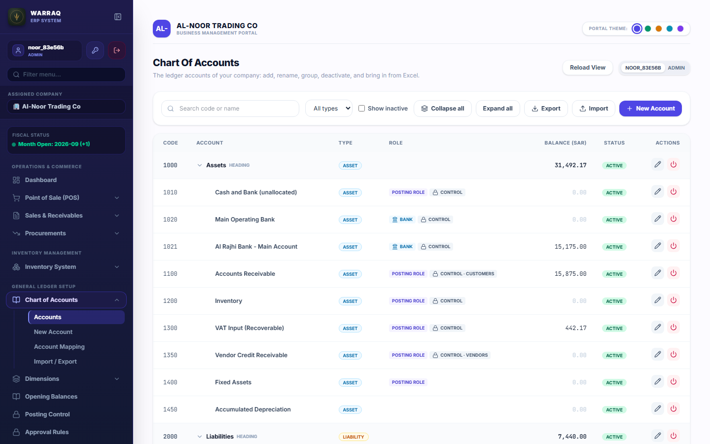
General Ledger Setup › Chart of Accounts › Accounts. Every company starts with a standard Saudi chart. Headings (bold) group accounts and show totals; only accounts take postings. You can:
- New Account (menu New Account): code, name, Arabic name, type, parent heading.
- Rename or recode an account. You cannot change the type of an account that has postings, a role or a bank.
- Deactivate an account only when its balance is zero; accounts that documents depend on (roles, banks, control accounts) cannot be deactivated.
- Import / Export to Excel: the import shows a preview and saves only the rows you tick.
Control accounts (receivables, payables, stock, VAT, banks) can be posted only by their documents; manual journals refuse them.
2.2 Account mapping (BR-COA-06)
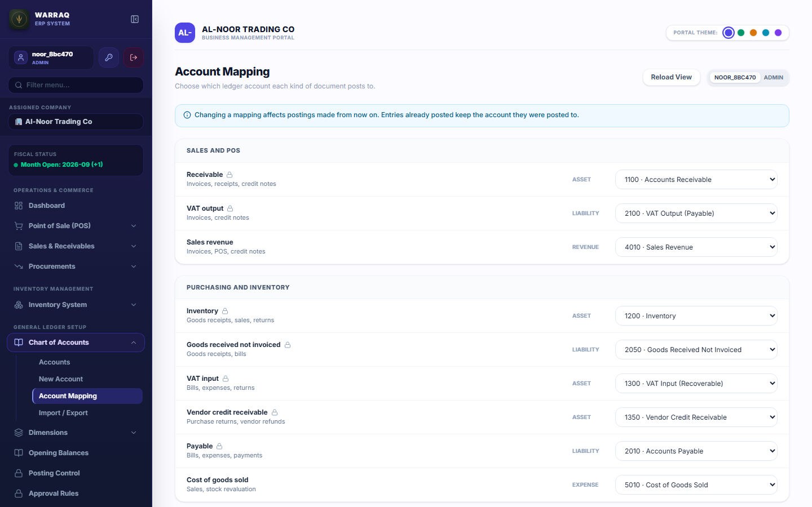
Chart of Accounts › Account Mapping. Choose which account each posting role uses (for example Sales revenue, Accounts receivable) and which account each expense category posts to (rent, utilities …). A change applies to new postings only; history stays where it was posted.
To give one customer or vendor its own receivable/payable account or default dimensions, open the customer or vendor in Trading Partners and set the Posting profile (needs the Account Mapping permission).
2.3 Dimensions (BR-DIM-01…05)
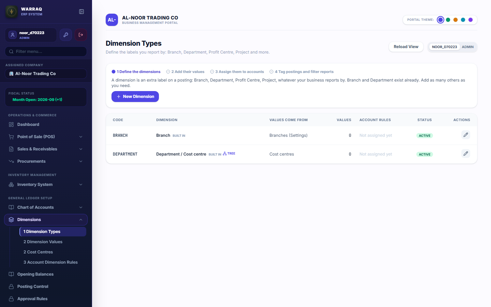
Dimensions are analysis tags on ledger lines. Branch and Department exist for every company; add your own (for example Project). Menu order: 1 Dimension Types → 2 Dimension Values / Cost Centres → 3 Account Dimension Rules. A rule says, per account, whether a dimension is required, optional or not allowed, with an optional default; apply a rule to many accounts at once after a preview. Manual journals enforce required; documents apply defaults.
2.4 Posting control (BR-PER-03…06)
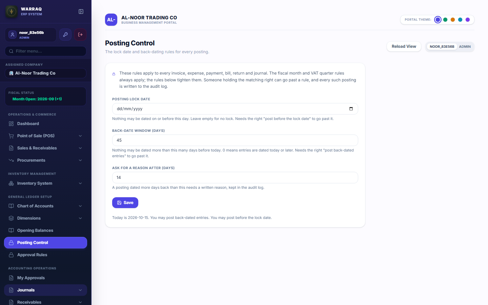
Posting Control decides how far back anyone may post:
- Lock date — nothing may be dated on or before it.
- Back-date window (days) — nothing may be dated more than this many days before today.
- Reason after (days) — older entries must carry a reason.
Anyone can read the rules; changing them needs Posting Control › update. People holding back-date or override lock rights can go past the window or the lock, and every use is written to the audit log. The fiscal month must also be open and, for tax documents, the VAT quarter not yet filed.
2.5 Opening balances (BR-JNL-09)
Opening Balances. If you start part-way through a year, enter the opening figure of each account, Preview (nothing is saved), put any difference to an equity account, then Post once with confirmation. A wrong opening entry can be reversed with a reason and a corrected one posted.
Finance core · chapter 3
Receivables: invoices and receipts
3.1 Invoices
Invoices and credit notes are created in Sales & Receivables (unchanged). Each posts to the receivable control account tagged with the customer (BR-AR-01).
3.2 Receive Payment (BR-AR-03, 04)
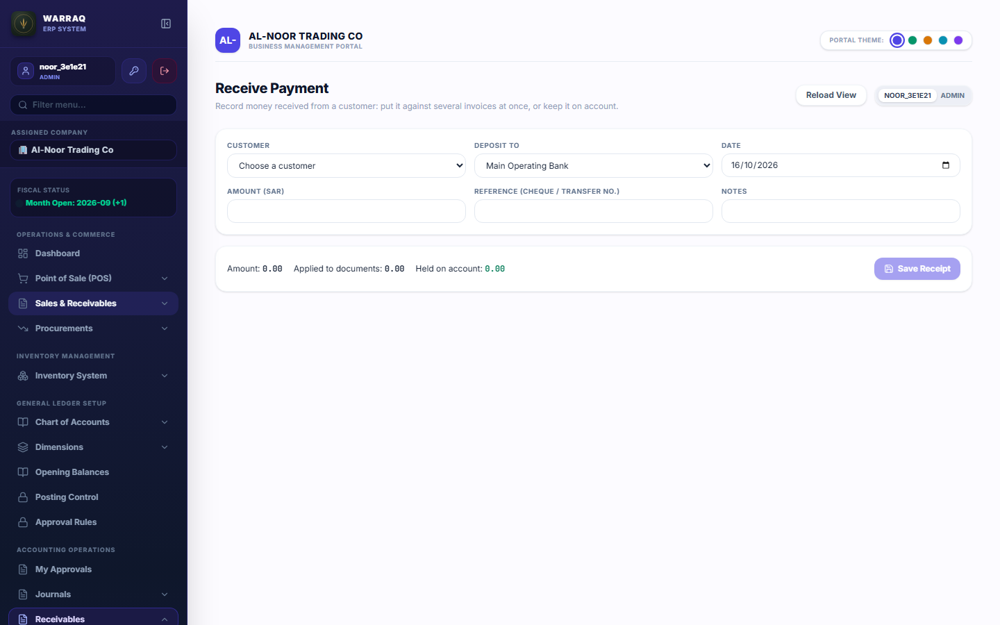
Receivables › Receive Payment. Choose the customer, the bank to deposit to, the date, the amount and an optional reference (cheque or transfer number).
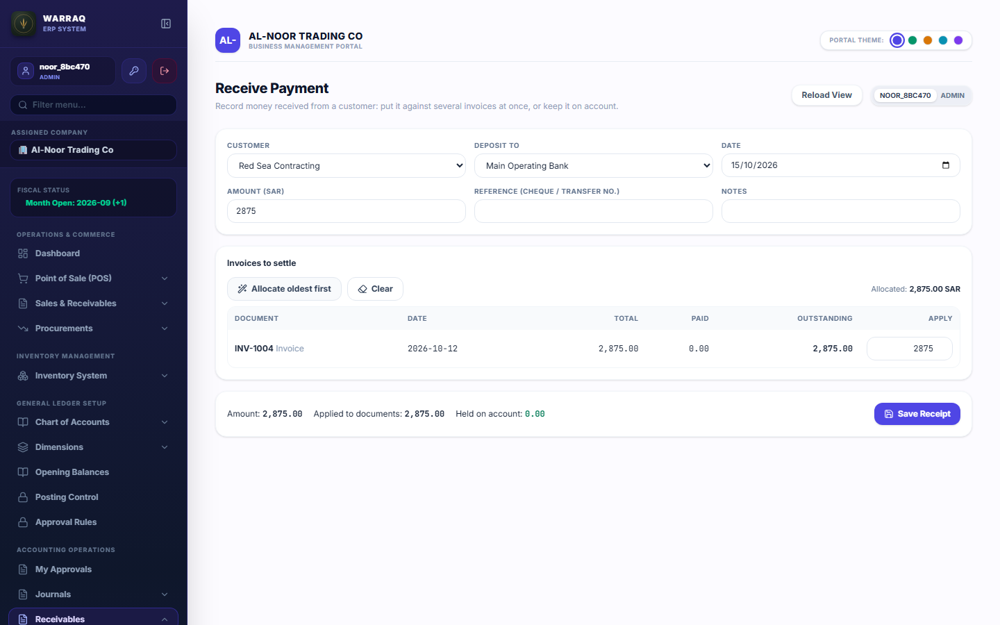
The customer's open invoices appear. Type how much goes to each, or press Allocate oldest first. The bar below shows Amount, Applied to documents and Held on account. Anything not applied stays on account with the customer. Save Receipt creates one voucher and one ledger entry. A receipt dated in a locked period, with an inactive bank, or with allocations above the amount or above what an invoice still owes, is refused with a message.
3.3 Receipts: list, detail, print, apply, cancel
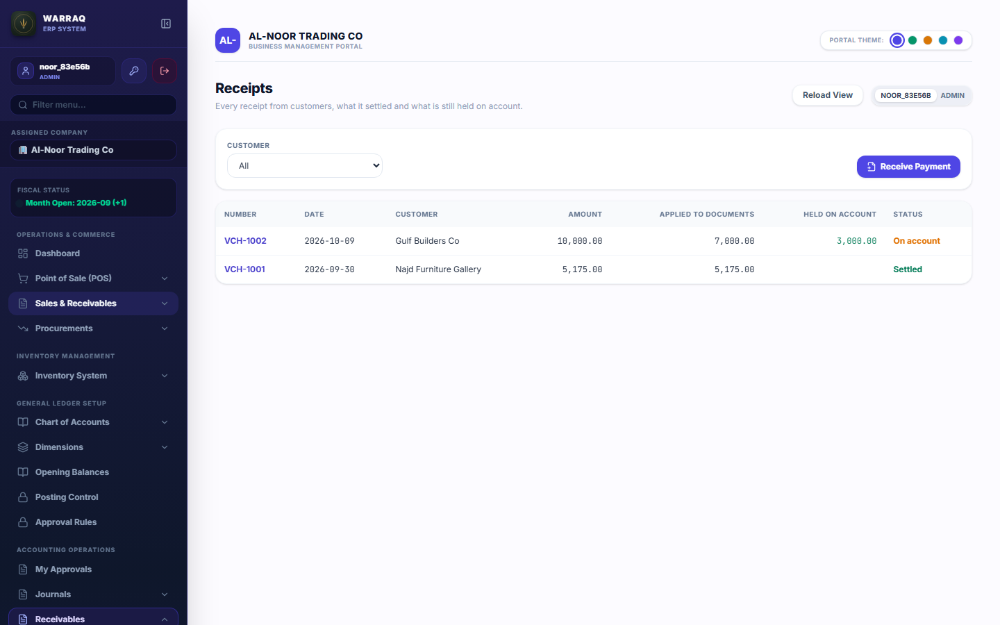
Receivables › Receipts lists every receipt with Amount, Applied to documents, Held on account and status (On account / Settled / Cancelled). Filter by customer.
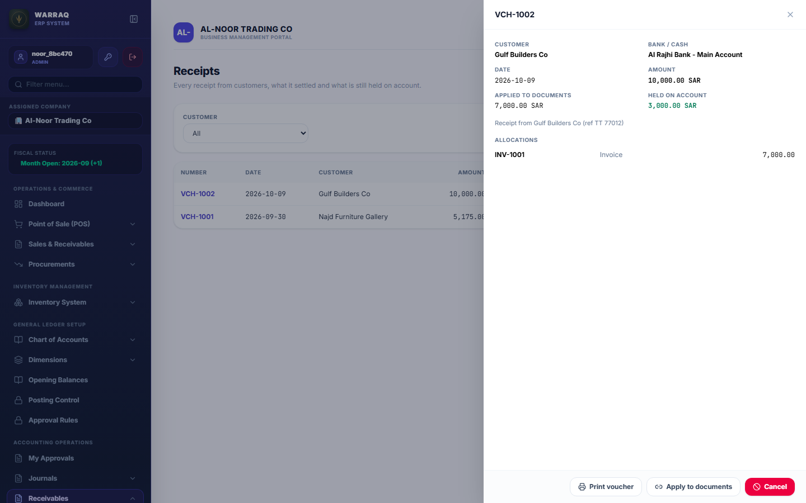
Click a row for the detail: party, bank, allocations. From here:
- Print voucher — the Receipt Voucher with settled documents and the accounting entry (below).
- Apply to documents — put money held on account against invoices later.
- Cancel — needs a reason; the entry is reversed, a reversal voucher is written and the invoices become open again. An invoice paid through a receipt cannot be cancelled until that receipt is.
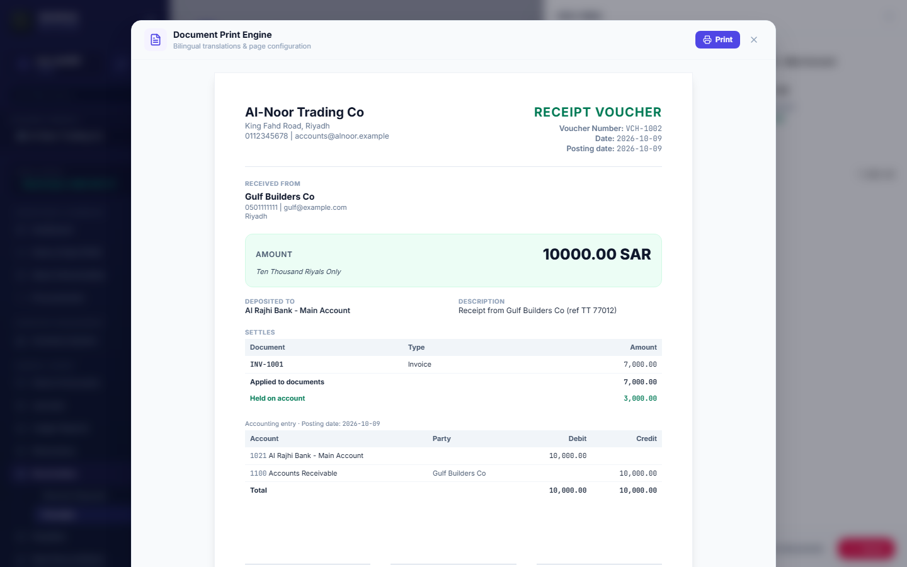
The Receipt Voucher shows who paid, the amount in words, where it was deposited, which invoices it settled, what is held on account, the accounting entry (bank debited, receivable credited, customer named) and signature boxes. Press Print in the preview.
Finance core · chapter 4
Payables: expenses, bills and payments
Expenses, goods receipts and purchase bills are entered in Procurements (unchanged). Each posts to the payable control account tagged with the vendor (BR-AP-01…03).
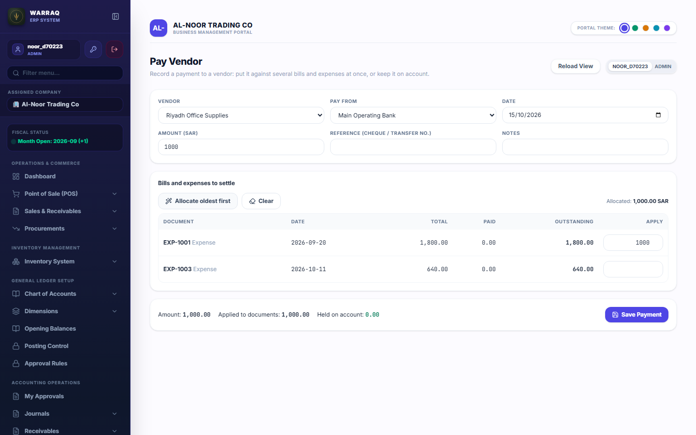
Payables › Pay Vendor works exactly like Receive Payment, for the vendor's open bills and expenses together (BR-AP-05). Payables › Vendor Payments lists payments; a payment can be applied later or cancelled with a reason.
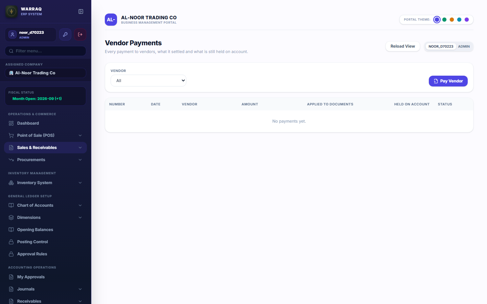
A payment kept on account is an advance to the vendor: it appears as an asset until it is applied.
4.1 Approval of large payments and bills (BR-JNL-10)
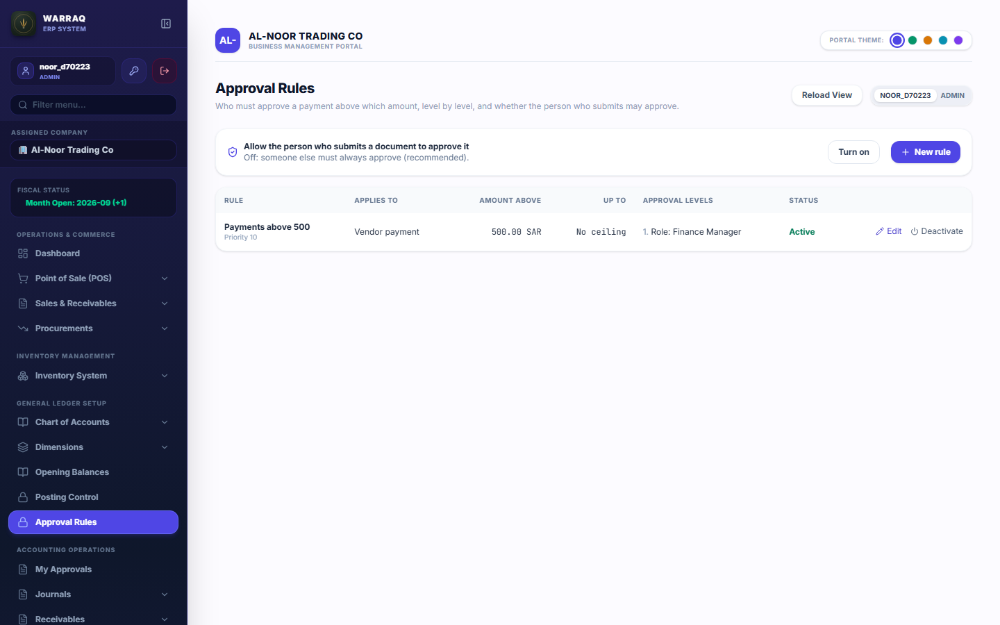
General Ledger Setup › Approval Rules (setup, once). A rule says: vendor payments (or vendor bills) above this amount (up to an optional ceiling) need these approvers, level by level. Each level names a role, a named user, anyone holding a permission, or the manager of the submitter (set each person's Manager on their user record in Settings › Users: it must be someone in the same company and cannot loop back). Lower priority numbers are checked first. A payment or bill that matches no rule posts directly, as before. A manual journal whose total falls inside a Manual journal rule is submitted as before but needs the rule's levels instead of the single approval step: each level holder approves from the journal's own screen or from My Approvals (they need not hold the journal posting right), the last approval posts it, and rejecting returns it to the preparer. A journal with no matching rule keeps the single approval step. A credit note that matches a rule (rule type Credit note, judged on the invoice total) waits in the same way: nothing is issued and the invoice is untouched until the last approval, and the credit note is created in the name of the person who requested it. A vendor bill that matches a rule waits in the same way (nothing is created and the goods receipt stays unbilled until the last approval). The goods-receipt option paid at delivery is refused when a rule would hold the bill or its payment: receive the goods, then bill and pay through the normal screens. The switch at the top decides whether the person who submits a payment may approve it themselves: off (recommended) means someone else must always approve; only the company owner / administrator can change it, and every use of it is marked and audited.
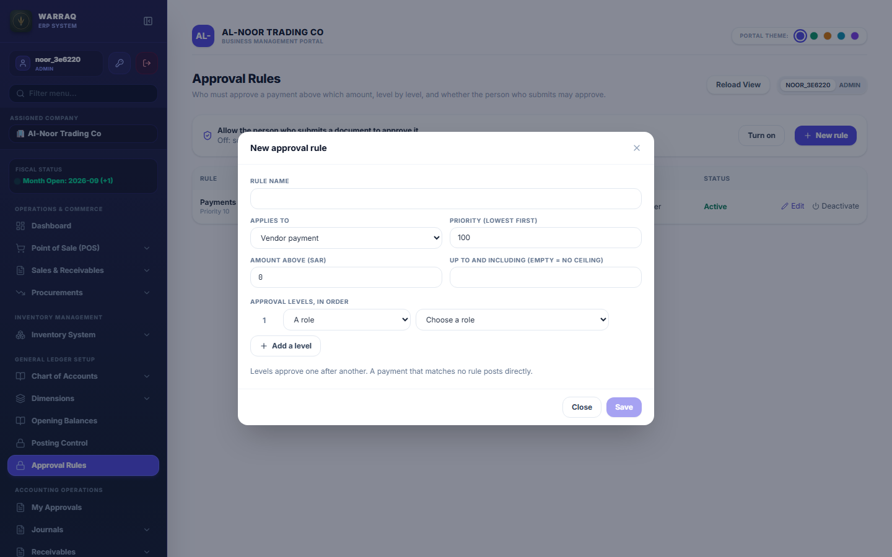
New rule opens the editor: name, what it applies to (vendor payment, vendor bill, credit note or manual journal), the amount band, the priority, and the levels in order (a role, a named user, anyone holding a permission, or the manager of the submitter, with Add a level).
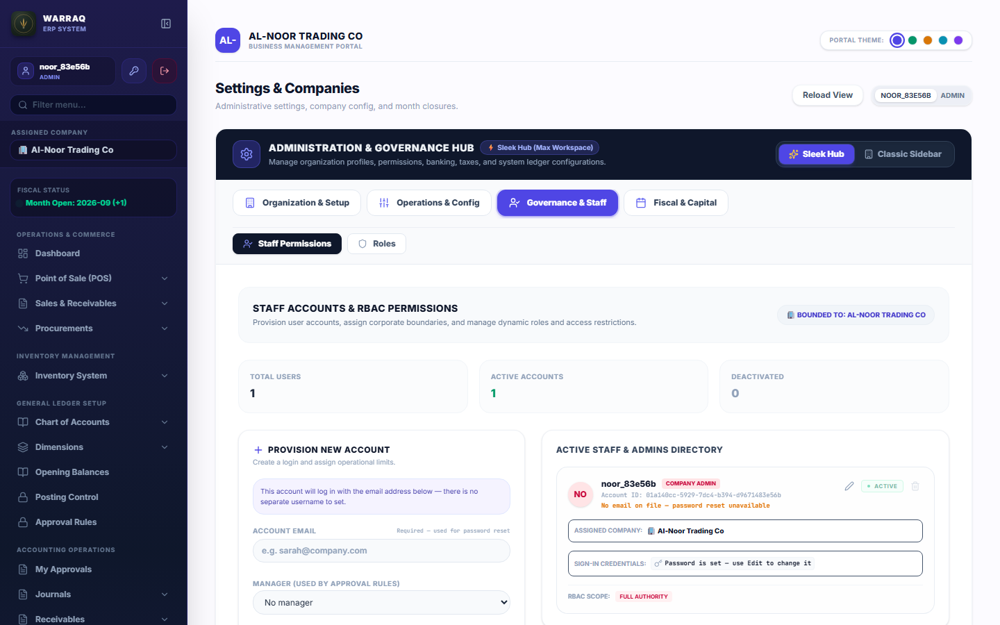
The Manager field sits on the user form (Settings & Companies › Governance & Staff › Staff Permissions, below the account email). It is what a manager of the submitter level looks up: pick someone from the same company, never the person themselves and never a loop.
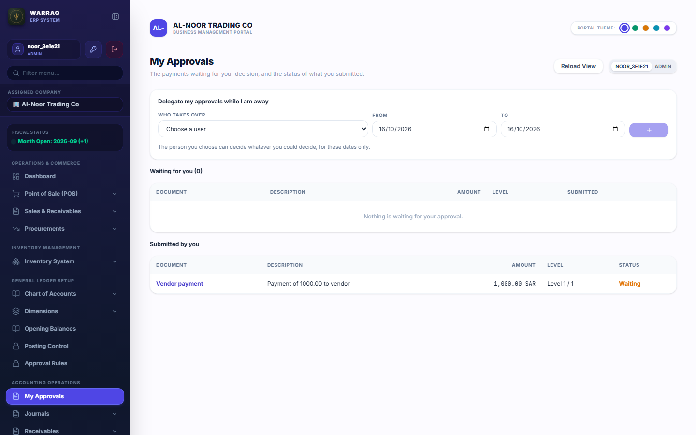
When a payment falls inside a rule, Save Payment sends it for approval and nothing is posted: no voucher, no ledger entry, no bank movement. Accounting Operations › My Approvals lists what waits for you and what you submitted.
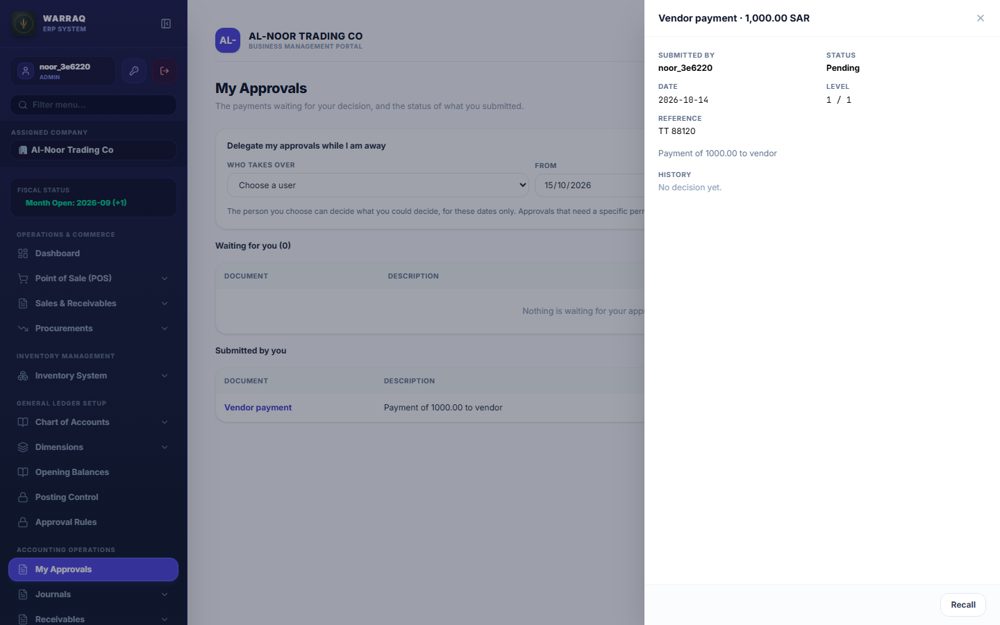
Open a request to see who submitted it, the date, the reference, the level and the history. Approve moves it to the next level; the last approval creates the payment (the posting-control rules are checked again at that moment). Reject needs a reason and nothing is posted. The person who submitted a request can Recall it while it is pending (nothing was posted, so nothing is undone); to correct a payment or bill, recall it and submit a new one.
Delegating while you are away. At the top of My Approvals, Delegate my approvals while I am away: choose who takes over and the dates. For those dates they can decide whatever you could decide (role, named-user, permission and manager levels alike), and the history shows for
Finance core · chapter 5
Who owes what: aging and party ledgers (BR-AR-06, 07; BR-AP-06)
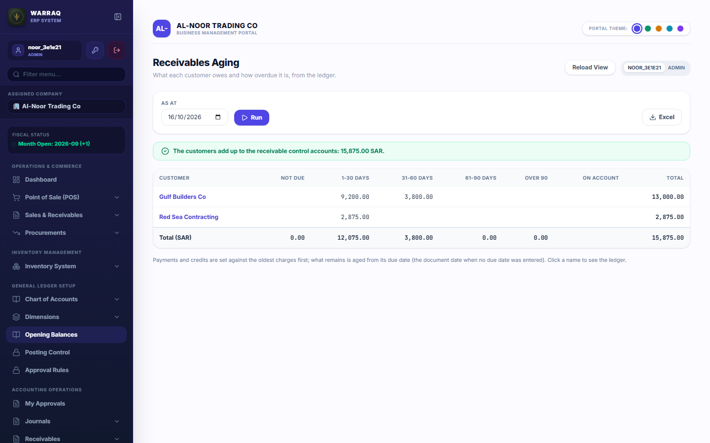
Ledger Reports › Receivables Aging shows each customer's open charges by age (payments are set against the oldest charge first), money held On account in its own column, and a green line proving the customers add up to the receivable control account. Click a name to open the customer's ledger. Export to Excel.
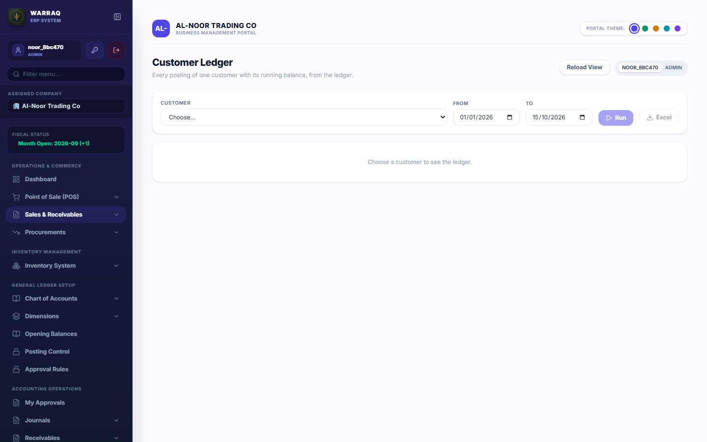
Customer Ledger lists every posting of one customer with opening balance, running balance and the document number; click a line to open the entry.
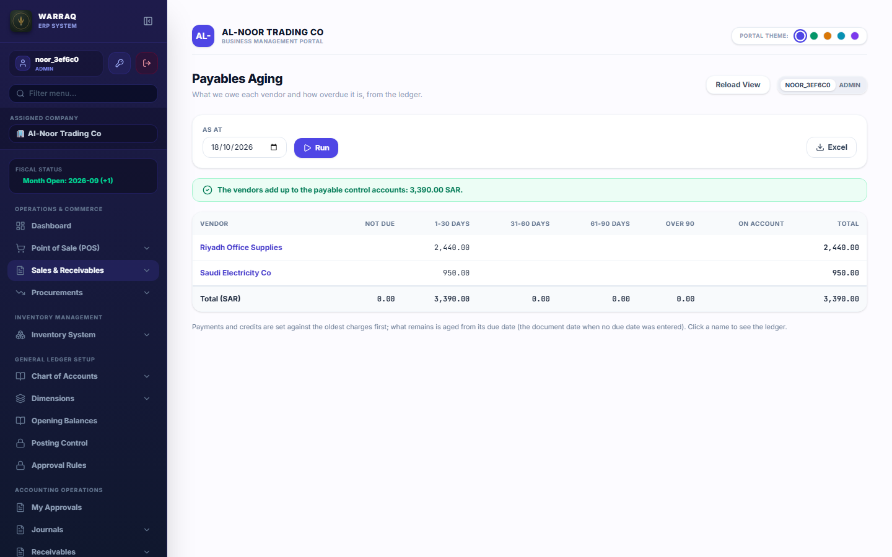
Payables Aging and Vendor Ledger are the same for vendors.
Finance core · chapter 6
Journals
6.1 Journal listing and detail (BR-JNL-08)
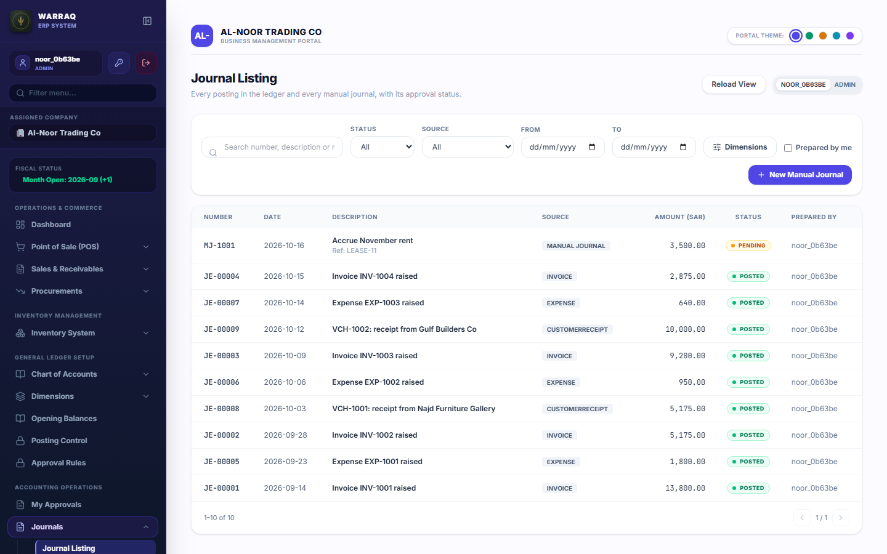
Journals › Journal Listing shows every posting of the company — documents and manual journals — with filters for status, period, source and text.
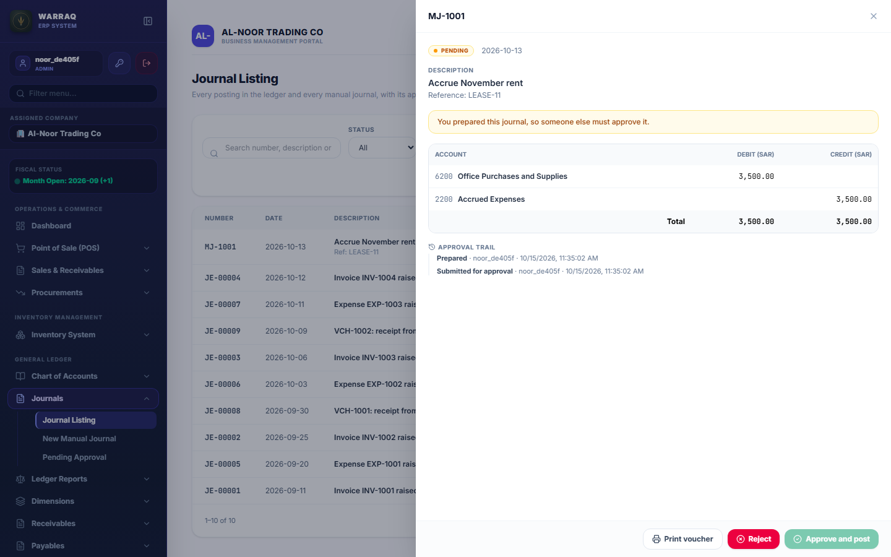
Click a row to see accounts, totals and the approval trail, and to Print voucher, Reject or Approve and post (if you may).
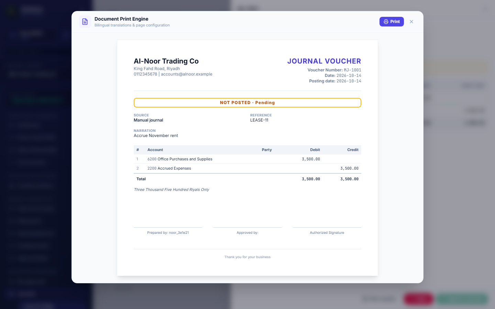
The Journal Voucher prints any entry: accounts, parties, dimensions, totals in words, prepared-by and approved-by. A journal that is not yet posted prints with a NOT POSTED banner.
6.2 New manual journal (BR-JNL-01…07)
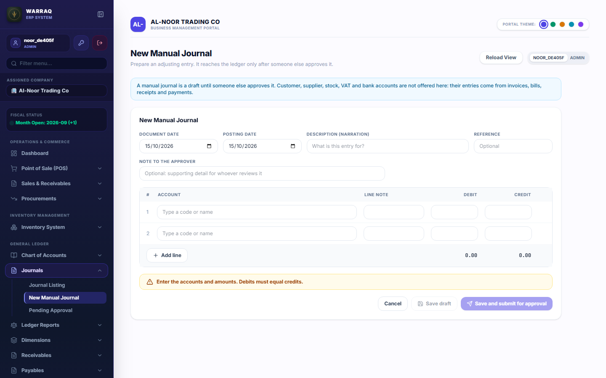
Journals › New Manual Journal. Enter the date, description, reference and at least two lines (an account and a debit or a credit). Control, bank and heading accounts are not offered — they are posted by their documents. Save as a draft, then submit for approval. Dates must satisfy Posting Control; a date older than the reason threshold needs a reason.
6.3 Approval (maker-checker)
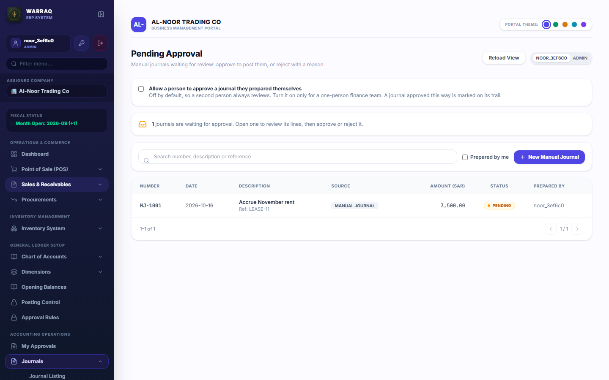
Journals › Pending Approval lists journals waiting for someone other than the preparer with the post right. Approving posts the journal (the date rules are checked again). Rejecting needs a written reason and returns it to draft. The company owner may allow self-approval; such journals are marked.
Reversing a posted journal creates a reversing draft that goes through the same approval; the original stays posted until then.
Finance core · chapter 7
Financial statements (BR-RPT-01…10)
All statements are computed from the ledger on the server for your company only. Each has Run, Design, Print, Excel, optional Dimensions filters and comparative columns.
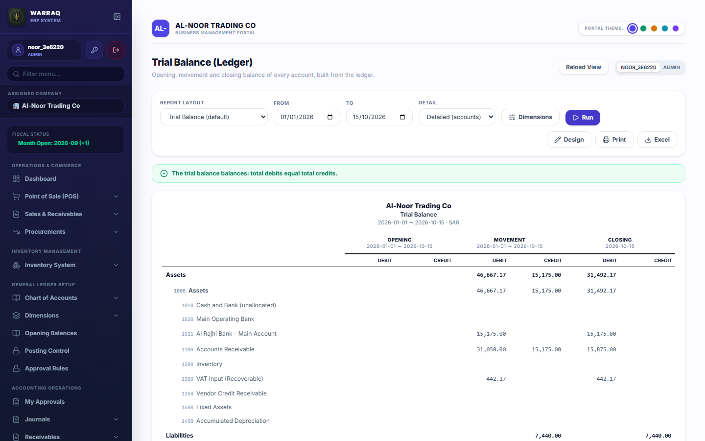
Trial Balance (Ledger) — opening, movement and closing for every account. A green line states that debits equal credits. Click any figure to open the General Ledger for exactly the accounts, period and filters behind it.
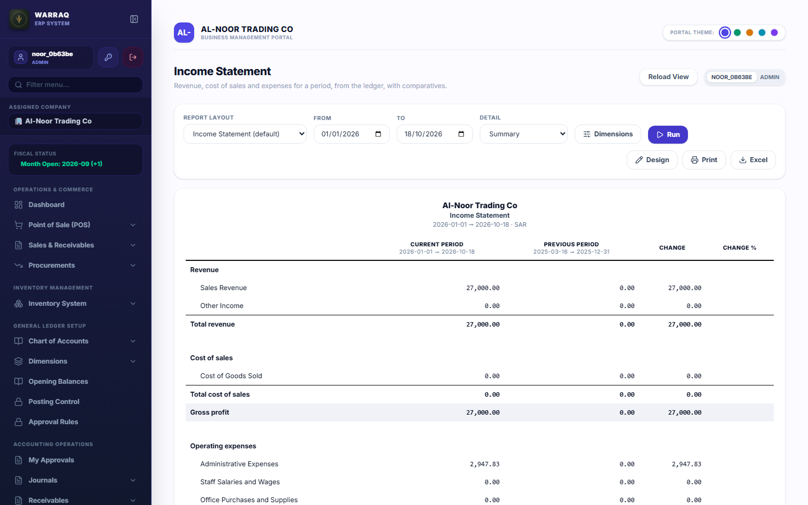
Income Statement — revenue, cost of sales, expenses and profit, with comparative and variance columns.
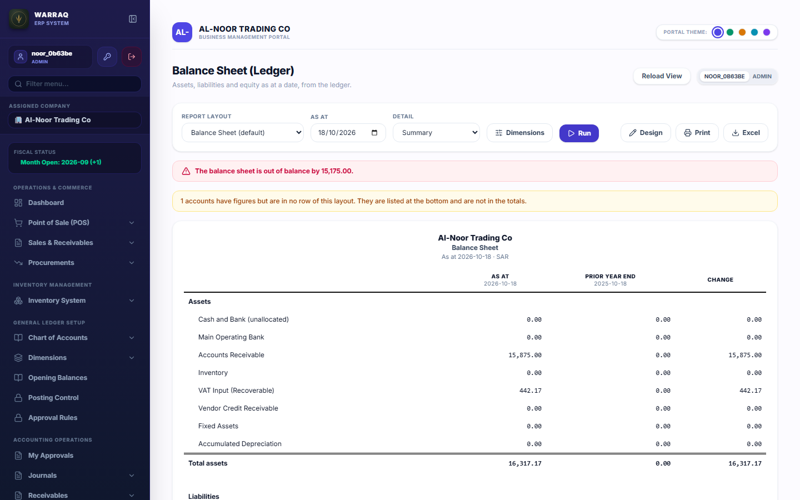
Balance Sheet (Ledger) — assets, liabilities and equity as at a date, with profit to date inside equity and a statement of whether assets equal liabilities plus equity.
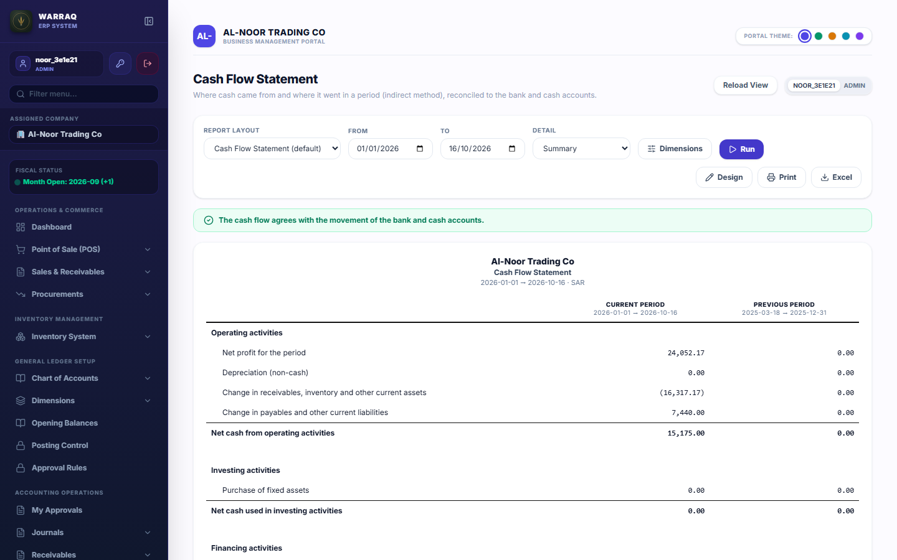
Cash Flow Statement — indirect method, reconciled to the bank and cash accounts. Changes in Equity completes the set.
Ledger vs Documents compares the ledger with the document-based reports account by account (money held on account is netted). Differences must read 0.00; a difference means a rule is broken and should be reported, never "adjusted".
Report Designer (for authorised users) copies a standard statement or builds your own: choose rows (accounts by account, parent, range, type or role; subtotals; formulas; text) and columns (period, value, dimension filter, variance), then format. Accounts that no row covers are listed with a warning so nothing is silently left out. Reset to standard restores a built-in one.
Finance core · chapter 8
Bank reconciliation (BR-BNK-01…08)
Bank Reconciliation lists sessions. Start reconciliation: choose the bank, the statement date and the ending balance printed on the statement. Only one session per bank can be in progress, and each statement date must be after the last completed one.
The session shows, left, every posted line of that bank's ledger account up to the statement date, and, right, the statement lines. At the top, the formula updates live: statement balance + deposits in transit − payments outstanding must equal the book balance, and the Difference must be zero.
- Add statement lines by typing them, or Import CSV (columns Date, Description and Amount — or Debit and Credit; day-first dates are understood; a preview is shown; importing the same file twice adds nothing).
- Tick ledger lines that appear on the statement, or Suggest matches (equal amount within 10 days — you accept them) and Match to….
- A bank fee or interest that the books do not have yet: on that statement line press Post as bank charge (expense account) or Post as interest (income account). One entry is posted, cleared and matched in one step. A mistaken one can be Reversed while the session is open. A session is never forced to balance.
- Complete is enabled only when the difference is zero and every statement line is matched. A completed session is locked: a payment or receipt behind a cleared line cannot be cancelled. Reopen (own permission, a reason, latest completed session only) is audited.
Print report produces the Bank Reconciliation Statement: balance per bank, deposits in transit, payments outstanding, adjusted balance, balance per books, difference and the outstanding lists.
Finance core · chapter 9
Period routine and corrections
Daily: post documents; receive and pay; check Pending Approval. Weekly: Receivables / Payables Aging; chase overdue items. Month end: (1) reconcile every bank; (2) clear Pending Approval; (3) run Trial Balance and Balance Sheet — both must show the balanced line; (4) run Ledger vs Documents — all differences 0.00; (5) file VAT if due; (6) close the fiscal month in the existing period screen.
| I need to… | Do this |
|---|---|
| Undo a receipt or payment | Receipts / Vendor Payments › open it › Cancel with a reason |
| Correct a posted manual journal | Open it › Reverse; approve the reversal; post the right one |
| Correct a sales invoice already sent to ZATCA | Raise a credit note; invoices cleared by ZATCA cannot be cancelled |
| Correct a bank fee posted by mistake | In the open reconciliation, Reverse that line |
| Post into a locked period | Ask a user holding override lock; the use is audited |
If the system says…
| Message | Meaning and action |
|---|---|
| "…locked" / "…back-date window" / "…reason" | Posting Control rule: choose a later date, give a reason, or ask an authorised user |
| "…month is closed" / "…VAT quarter…" | The fiscal month or VAT quarter is closed or filed; date it in the open period |
| "…settled through receipt / payment …" | Cancel that receipt/payment first |
| "…the approval rule … applies to it" | The receipt's paid at delivery option would bypass an approval rule: save the receipt without it, then bill and pay normally |
| "…cleared in a bank reconciliation…" | Open the reconciliation, un-clear the line (or have it reopened), then cancel |
| "The reconciliation does not balance" | Post an entry for what is missing (fee/interest) or fix the document; never force it |
| "…control account…" | Post through the customer/vendor document, not a manual journal |
Finance core · chapter 10
Roles and permissions
Set in Settings › Roles. Suggested bundles (each leaf is module.leaf; see annex C):
| Role | Typical rights |
|---|---|
| Accountant | chartOfAccounts read/create/update, journals create/read/update, openingBalances read/preview, reports read, bankReconciliation create/read/match/adjust/complete, customerReceipts & vendorPayments create/read |
| Finance manager | Accountant + journals.post, journals.reverse, accountMapping, postingControl.update, bankReconciliation.reopen, customerReceipts/vendorPayments.delete |
| Controller | Finance manager + postingControl.backDate, postingControl.overrideLock, openingBalances.post |
| AR / AP clerk | customerReceipts / vendorPayments create, read; aging reports |
| Approver (any level) | approvals.read, plus whatever the rule names (a role, a named user, a permission, or being the submitter's manager) |
| Auditor | All read leaves and reports; no create/update |
A person's rights are the union of their roles. Administrators hold every right. Branch-restricted users see their branches' figures only, and the screens say so.
Finance core · chapter 11
Arabic and Urdu
Choose the language at sign-in or in your profile. Screens mirror right-to-left; vouchers, journal vouchers and reconciliation statements print right-to-left, with Arabic account names where the chart has them. Amount in words is currently printed in English.
Finance core · chapter 12
Screen index
| Screen | Menu path | BRD |
|---|---|---|
| Chart of Accounts / New Account / Import–Export | General Ledger › Chart of Accounts | COA |
| Account Mapping | Chart of Accounts › Account Mapping | COA-06 |
| Dimension Types / Values / Cost Centres / Rules | Dimensions | DIM |
| Posting Control | General Ledger Setup › Posting Control | PER |
| Approval Rules | General Ledger Setup › Approval Rules | JNL-10 |
| My Approvals | Accounting Operations › My Approvals | JNL-10 |
| Receive Payment / Receipts | Receivables | AR-03…05 |
| Pay Vendor / Vendor Payments | Payables | AP-05 |
| Receivables Aging / Customer Ledger / Payables Aging / Vendor Ledger | Ledger Reports | AR-06, 07; AP-06 |
| Journal Listing / New Manual Journal / Pending Approval | Journals | JNL |
| General Ledger, Trial Balance, Income Statement, Balance Sheet, Cash Flow, Changes in Equity, Custom Reports, Report Designer, Ledger vs Documents | Ledger Reports | RPT |
| Bank Reconciliation | Accounting Operations › Bank Reconciliation | BNK |
| Opening Balances | General Ledger Setup › Opening Balances | JNL-09 |
Reference
Glossary & quick reference
- Company vs. Branch
- A Company is a fully isolated tenant on the platform (its own users, customers, products, ZATCA identity). A Branch is one physical location within a company, used for reporting and document attribution — never a separate tenant.
- Employee vs. User vs. Job Title vs. Role
- An Employee is a real person on staff (HR record, may never log in). A User is a login account (may or may not link to an employee). A Job Title is an employee's HR position (Sales Associate, Cashier…) — has zero effect on app access. A Role is a bundle of screen permissions assigned to a User — has zero effect on HR records.
- Quotation vs. Invoice
- A Quotation is a non-binding estimate — no stock impact, no accounting postings, freely editable. An Invoice is the real, binding sale — deducts stock, posts to accounting, and (if ZATCA is enabled) is submitted to ZATCA automatically.
- Credit Note / Debit Note
- Not separate document types under the hood — both are rows in the same table as Invoices, distinguished by a type code. A Credit Note is the only compliant way to reverse a ZATCA-cleared invoice.
- PR → PO → GRN → Bill
- Purchase Requisition (internal request, no vendor/price) → Purchase Order (priced, sent to vendor) → Goods Receipt Note (physical arrival, updates stock) → Purchase Bill (vendor's invoice, totals computed from the GRN).
- Accrual vs. Cash basis
- Accrual counts revenue/expense the moment it's invoiced/billed. Cash counts it only when money actually moves. The Profit & Loss report can show either.
- ICV / PIH
- ZATCA's internal invoice-chaining bookkeeping — an Invoice Counter Value and the Previous Invoice Hash, chaining every invoice cryptographically to the one before it, per company per environment. Shown for reference; never something you act on directly.
Where each master-data type is used later
| Master data | Set up under | Used on |
|---|---|---|
| Customer | Trading Partners | Quotations, Invoices, POS |
| Vendor | Trading Partners | Requisitions, POs, GRNs, Bills, Expenses |
| Product / Service | Product Catalog | Every sales & purchase document line item |
| Warehouse | Warehouses | Invoices, GRNs, Stock Registry, Stock Takes |
| Employee + Job Title | Employees | Sales Invoice's Sales Associate field, User accounts |
| Branch | Branches (Locations) | Every transactional document, branch-scoped users |
| Bank Account | Bank Accounts | Invoice/Expense payment postings |
| Tax Slab | Tax Slabs | Every taxable document line |
| Role | Roles | Assigned to Users under Staff Permissions |
Back to all documentation · technical documentation · ZATCA onboarding guide
Version: built 2026-10-19, branch v2, after commit 82ff3f1.
A note on how this manual stays accurate
- Every screen mockup in this document reproduces the live Warraq application as it exists at the time of writing — same field names, same defaults, same layout.
- If the running application ever visibly differs from what's described here, trust the running application, and flag the difference so this manual can be corrected.
- For ZATCA onboarding specifically, always defer to the dedicated ZATCA Onboarding — Company Setup Guide, which is verified against ZATCA's own sandbox gateway and SDK validator.